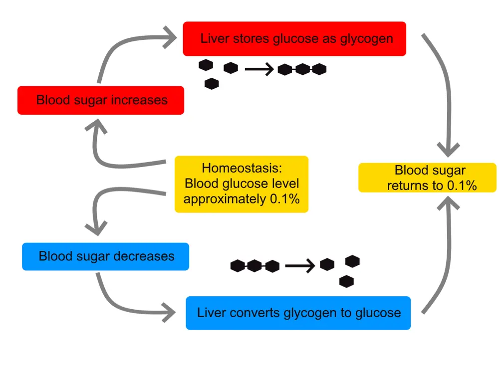

DX.2 — Hypoglycémie
1. Définition et sémantique
Une transpiration abondante, une pâleur et un tremblement imposent de mesurer la glycémie avant toute autre hypothèse, car le protocole des HUG demande de traiter sans attendrew04c5a2-2. Le mot « hypoglycémie » recouvre toutefois trois usages que le médecin doit distinguer : le seuil d'action, le diagnostic et la gravité.
1.a Le seuil d'action chez la personne diabétique
Le protocole clinique des HUG définit l'hypoglycémie de la personne diabétique adulte par une glycémie inférieure à 4 mmol/lw04c5a2-1. Cette valeur sert de seuil d'action, donc le soignant corrige dès qu'il la mesure, avec ou sans symptômesw04c5a2-2. Si la mesure ne peut pas être faite immédiatement, le même protocole demande de traiter sans attendre le résultatw04c5a2-2.
Le guide intrahospitalier des HUG reprend la triade de Whipple : une glycémie inférieure à 4 mmol/l, des symptômes ou autonomes, et une amélioration par la prise de glucosewc26608-61. Cette définition protège contre deux erreurs, puisqu'elle exige la glycémie basse et la réponse au resucrage. Le guide ajoute que l'hypoglycémie du patient diabétique est le plus souvent iatrogène, c'est-à-dire due à l'insuline ou aux sécrétagogueswc26608-60.
La neuroglucopénie désigne la souffrance du système nerveux privé de glucose, car le cerveau dépend d'un apport continu de ce substratw5d6de5-84. La Société française d'endocrinologie la reconnaît à des troubles de concentration, de l'élocution ou du comportement, à une diplopie, à des convulsions ou à une confusionw716338-13w716338-14.
Ces signes diffèrent de la réaction adrénergique, qui comprend l'anxiété, les tremblements, les sueurs, la pâleur et la tachycardiew716338-13. Le premier groupe traduit donc une atteinte cérébrale, alors que le second traduit la réponse du système sympathique, laquelle explique la transpiration.
1.b Le diagnostic chez la personne sans diabète
En dehors du diabète, la Société française d'endocrinologie retient un seuil de 0,50 g/l, soit 2,75 mmol/l, alors que chez le diabétique elle retient 0,70 g/l, soit 3,9 mmol/lw716338-9. Elle exige la simultanéité des symptômes et d'une glycémie veineuse basse, car une valeur capillaire isolée ne suffit pasw716338-7w716338-8. Une glycémie veineuse de 0,40 g/l peut s'observer chez un sujet sain après 72 heures de jeûne, surtout chez de jeunes femmes mincesw716338-8. Une valeur basse isolée ne suffit donc pas à poser le diagnostic.
Cette société note que le diagnostic est souvent porté par excès, chez des patients venus avec la conviction d'avoir des hypoglycémiesw716338-5. Les « hypoglycémies fonctionnelles », c'est-à-dire des manifestations neurovégétatives sans hypoglycémie documentée, ne devraient pas être évoquées sans hypoglycémie veineuse prouvéew716338-5. Le médecin évite ainsi des examens inutiles, coûteux et non dépourvus de risquesw716338-5.
1.c La gravité : trois niveaux et la notion d'aide extérieure
Le groupe international d'étude de l'hypoglycémie définit trois niveaux pour aligner la terminologie des essais et des pratiques, ainsi les soignants parlent le même langagew17a045-4. Le niveau 1 correspond à une valeur d'alerte de 3,9 mmol/L ou moins, soit 70 mg/dLw17a045-4. Le niveau 2 correspond à une valeur inférieure à 3,0 mmol/L, soit moins de 54 mg/dL, jugée suffisamment basse pour signer une hypoglycémie sérieuse et cliniquement importantew17a045-4. Le niveau 3 désigne, selon l'American Diabetes Association, une atteinte cognitive sévère qui exige une aide extérieure pour récupérerw17a045-4.
En pratique clinique, un épisode est dit non sévère lorsque la personne se traite seulew5d6de5-63. Il est dit sévère lorsqu'elle ne peut pas se traiter et qu'un tiers doit intervenirw5d6de5-63. Le groupe international ajoute qu'une hypoglycémie sévère peut conduire à la perte de connaissance et menacer la view17a045-3. L'hypoglycémie nocturne survient pendant le sommeil et reste souvent asymptomatiquew17a045-3.
| Repère | Valeur ou critère | Usage clinique | Piège |
|---|---|---|---|
| Seuil HUG, adulte diabétique | Glycémie < 4 mmol/l | Corriger sans attendre | Ne pas l'appliquer comme preuve d'insulinome |
| Triade de Whipple | Symptômes, glycémie basse, réponse au glucose | Affirmer une vraie hypoglycémie | Une valeur capillaire isolée ne suffit pas |
| Seuil hors diabète (SFE) | 0,50 g/l soit 2,75 mmol/l | Poser le diagnostic étiologique | Sujet sain à jeun : 0,40 g/l possible |
| Niveau 1 (IHSG) | ≤ 3,9 mmol/L | Alerte | Ne dit rien de la cause |
| Niveau 2 (IHSG) | < 3,0 mmol/L | Hypoglycémie importante | Chercher le déclencheur |
| Niveau 3 (IHSG) | Atteinte cognitive, aide d'un tiers | Voie de secours adaptée à la vigilance | Aucune valeur seuil n'est requise |
Le tableau relie chaque repère à la décision : le seuil de 4 mmol/l déclenche le traitement, tandis que la triade et le seuil de 0,50 g/l fondent le diagnostic étiologiquew04c5a2-1w716338-9. Une personne sous insuline dont la glycémie est basse et qui peut avaler se resucre sans attendre une prise de sang. Une personne sans diabète qui décrit des malaises mais dont la glycémie veineuse est normale pendant les symptômes ne relève pas du même raisonnement.
1.d Ce que l'hypoglycémie n'est pas, et ce qui s'en approche
L'hypoglycémie n'est pas un malaise postprandial sans glycémie basse, car la souffrance du patient ne remplace pas la mesurew716338-5. Elle diffère aussi de l'hypoglycémie postprandiale immédiate observée après une chirurgie du pylore ou de restriction gastrique, dont le diagnostic est facilew716338-4. Elle diffère enfin de l'hypoglycémie factice, provoquée par une prise cachée d'insuline ou de sulfonyluréew716338-27.
Les molécules antidiabétiques qui empêchent la glycémie de monter sans la faire descendre, comme la metformine, exposent peu à l'hypoglycémie lorsqu'elles sont prescrites sans insuline ni sécrétagoguew5d6de5-62. Cette distinction compte, car elle oriente l'enquête médicamenteuse devant une transpiration chez un patient diabétique.
2. Épidémiologie (Suisse, puis Europe)
L'hypoglycémie touche d'abord les personnes diabétiques traitées par insuline ou par sécrétagogues, ce qui explique que la fréquence suisse dépende de celle du diabète traité. Les sources lues décrivent le diabète en Suisse, la fréquence des épisodes chez les patients traités et, pour la personne sans diabète, la rareté de la cause tumorale.
2.a Le terrain : le diabète traité en Suisse
Selon l'Enquête suisse sur la santé, 6,2 % de la population de 15 ans et plus déclaraient en 2022 un diabète ou la prise d'un traitement antidiabétique, contre 4,8 % en 2017wa3c27f-1. La hausse concerne les femmes, de 4,5 % à 5,6 %, comme les hommes, de 5,1 % à 6,9 %wa3c27f-1. Environ un cinquième des personnes concernées s'injectent de l'insuline, tandis qu'un tiers environ ne prend aucun médicamentwa3c27f-2. Une proportion notable de la population est donc exposée à l'hypoglycémie médicamenteuse.
La proportion de personnes diabétiques atteint 12,7 % chez celles qui n'ont pas de formation postobligatoire et 4,8 % chez celles qui ont une formation tertiairewa3c27f-2. L'incidence du diabète augmente avec l'âge, surtout chez les hommeswa3c27f-2. L'Observatoire suisse de la santé précise que l'enquête ne distingue pas le diabète de type 1 du diabète de type 2, car certaines personnes ne déclarent pas correctement leur typewa3c27f-5. Les chiffres de prévalence de l'hypoglycémie eux-mêmes ne sont pas publiés dans cette source, donc le cours ne les invente pas.
2.b La fréquence des épisodes chez la personne traitée
Le groupe international d'étude de l'hypoglycémie observe que la prévalence annuelle d'hypoglycémie sévère augmente avec la durée du diabète de type 1w17a045-5. Chez les personnes ayant un diabète de type 1 depuis moins de 5 ans, 20 % développent une hypoglycémiew17a045-5. Chez celles dont le diabète dure depuis 5 ans ou plus, plus de 40 % en développent unew17a045-5. Le risque augmente donc avec l'ancienneté de la maladiew17a045-5. Chez les patients de type 2, la durée et le traitement modulent le risquew17a045-6. Le risque annuel d'hypoglycémie sévère dépasse 20 % sous insuline depuis plus de 5 answ17a045-6. Les épisodes non sévères sont plus fréquents, mais ils exposent à un risque bien moindrew17a045-6.
Le consensus britannique JBDS estime que les personnes ayant un diabète de type 1 font environ deux épisodes d'hypoglycémie légère par semainew5d6de5-64. Dans plusieurs grandes études, la prévalence annuelle de l'hypoglycémie sévère se situe de façon constante entre 30 et 40 %w5d6de5-64. Le risque des sulfonylurées est souvent sous-estimé, car leur durée d'action prolonge l'épisodew5d6de5-66. Les personnes âgées et celles qui ont une insuffisance rénale sont particulièrement exposéesw5d6de5-66.
Les patients T2DM traités par insuline sont plus souvent hospitalisés pour cette cause que les patients T1DMw5d6de5-65. Plus d'un tiers de 2000 appels d'ambulance pour hypoglycémie sévère étaient des appels répétés, ce qui désigne une minorité aux récidives fréquentesw5d6de5-65. Cette récidive justifie la recherche systématique d'un facteur correctible après chaque épisode.
2.c L'hypoglycémie à l'hôpital
La plupart des hypoglycémies surviennent chez des personnes hospitalisées pour une autre raison, car elle est rarement le motif principal d'admissionw5d6de5-67. À l'admission, une glycémie capillaire révélait une hypoglycémie chez 9,5 % des patients diabétiquesw5d6de5-67. L'hypoglycémie était la cause de 5 % des admissions des patients T1DM et de 1,5 % de celles des patients T2DMw5d6de5-67.
Dans l'audit national britannique de 2019, 18,4 % des patients hospitalisés signalaient au moins un épisode inférieur à 4 mmol/L au cours des 7 jours précédentsw5d6de5-68. Ce chiffre est élevé, donc la surveillance glycémique hospitalière reste nécessaire. Parmi eux, 7,0 % signalaient au moins un épisode inférieur à 3 mmol/Lw5d6de5-68. Un traitement injectable, glucose intraveineux ou glucagon intramusculaire, était nécessaire chez 1,4 % des patientsw5d6de5-69. D'autres pays rapportent des chiffres voisins, avec 12 à 18 % des patients touchésw5d6de5-69.
La perfusion d'insuline intraveineuse ne protège pas de l'hypoglycémie, puisqu'elle augmente fortement le risque d'épisodes inférieurs à 3 mmol/Lw5d6de5-72. Chez les patients de type 2 habituellement sous schéma basal-bolus, cette perfusion fait passer la probabilité de moins de 20 % à plus de 30 %w5d6de5-72. Les épisodes d'hypoglycémie significative surviennent surtout la nuit et tôt le matinw5d6de5-71.
2.d Mortalité, morbidité et enjeux de santé publique
Une méta-analyse de 15 études montre que les patients restent 4,1 jours de plus à l'hôpital lorsqu'ils font une hypoglycémiew5d6de5-96. Le risque de mortalité hospitalière est presque doublé, mais l'association n'implique pas une relation causalew5d6de5-96. L'hypoglycémie peut en effet marquer des patients plus gravement maladesw5d6de5-96. Le guide des HUG ajoute que des épisodes fréquents et sévères augmentent la durée d'hospitalisation et le risque de morbidité et de mortalité à un an, le plus souvent par arythmiewc26608-60.
2.e Chez la personne sans diabète : une cause rare mais cherchée
L'insulinome est la première cause tumorale d'hypoglycémie de l'adulte, donc il faut l'évoquer devant des épisodes sans diabètew716338-15. Il reste rare, avec moins de 5 cas par million et par an, mais il est la plus fréquente des tumeurs neuroendocrines fonctionnelles du pancréasw716338-17. Il mesure moins de 2 cm dans 90 % des cas et moins de 1 cm dans 30 % des casw716338-17. Il est malin dans seulement 10 % des cas, et la malignité ne se prouve que par des métastasesw716338-17.
Il s'inscrit dans une néoplasie endocrinienne multiple de type 1 chez 5 % des patientsw716338-18. Il est alors volontiers multiple, et il faut rechercher l'hyperparathyroïdie et l'adénome hypophysairew716338-18. Le diagnostic est souvent retardé, car certains patients reçoivent pendant plusieurs années des diagnostics neurologiques ou psychiatriques diversw716338-19.
| Chiffre | Population | Année | Source |
|---|---|---|---|
| 6,2 % de diabète déclaré | Suisse, 15 ans et plus | 2022 | MonAM, OFSP et Obsan |
| Plus de 40 % d'hypoglycémie annuelle | Diabète de type 1 depuis 5 ans ou plus | Non datée | IHSG |
| 9,5 % d'hypoglycémie à l'admission | Patients diabétiques hospitalisés | Étude citée par JBDS | JBDS 2023 |
| 18,4 % d'épisodes sur 7 jours | Patients hospitalisés, Angleterre et Pays de Galles | 2019 | JBDS 2023 |
| Moins de 5 cas par million et par an | Insulinome | 2021 | SFE, CEEDMM |
Le tableau montre que la source suisse chiffre le diabète traité mais non l'hypoglycémie elle-même. Le médecin retient donc que le risque suisse se déduit du nombre de personnes sous insuline ou sécrétagogues, sans valeur nationale publiée dans les sources lues.
3. Physiopathologie
La glycémie résulte d'un équilibre entre l'apport de glucose, son utilisation et l'insuline circulante, ce qui explique que l'hypoglycémie naisse presque toujours d'un excès d'insuline ou d'un défaut de substratw5d6de5-62. Le cours suit la chaîne hormonale, puis cellulaire, puis clinique, et relie chaque perturbation à l'examen qui la montre.
3.a La régulation normale de la glycémie
Plusieurs systèmes hormonaux maintiennent la glycémie entre 0,60 et 0,90 g/l à jeun, soit 3,3 à 5,0 mmol/l, et entre 1,20 et 1,30 g/l après les repasw716338-10. Lors d'un jeûne prolongé, la glycémie baisse et le cerveau utilise d'autres substrats, essentiellement les corps cétoniquesw716338-10. L'insuline est le principal facteur hypoglycémiant, car sa concentration s'élève après le repas et diminue pendant le jeûnew716338-10.
Les facteurs de croissance apparentés à l'insuline, IGF-1 et IGF-2, ne baissent la glycémie que pour des concentrations très fortes, car leur effet hypoglycémiant n'est significatif qu'à ce niveau, pharmacologiques ou tumoralesw716338-10. Les hormones de contre-régulation ont l'effet inverse : le glucagon, l'hormone de croissance, les catécholamines, le cortisol et, plus accessoirement, la somatostatinew716338-11. Ces hormones forment la défense du corps contre la baisse du glucose.
Rétrocontrôle de la glycémie : le foie libère ou stocke le glucose. Schéma pédagogique simplifié en anglais, boucle de rétroaction négative autour d'une glycémie de consigne

Le lecteur regarde d'abord le schéma brut, puis il compare avec la copie annotée.
Sur la copie annotée, chaque repère correspond à une phrase de la lecture guidée.
La lecture guidée suit la boucle, du normal vers la baisse.
- La glycémie de consigne se maintient autour de sa valeur normale.
- Une glycémie qui baisse déclenche la voie du bas.
- Le foie convertit le glycogène en glucose et ramène la glycémie vers la consigne.
Pièges.
- Le schéma omet les hormones : il ne montre ni insuline, ni glucagon, ni adrénaline.
- Le pourcentage affiché est une simplification pédagogique, et la clinique raisonne en mmol/L.
Ce que l'image décide. Le glycogène hépatique couvre un jeûne court seulement ; quand ce stock ou l'insuline défaille, la glycémie capillaire immédiate précède toute autre démarche.
3.b La cascade de défense, étape par étape
Lors d'une baisse de glycémie induite par l'insuline chez des témoins, les hormones sont sécrétées dans un ordre qui suit la profondeur de l'hypoglycémiew716338-11. Le glucagon, l'adrénaline et l'hormone de croissance sortent d'abord, puis le cortisolw716338-11. Les symptômes apparaissent sous 0,55 g/l, soit 3 mmol/l, et les troubles cognitifs sous 0,35 g/l, soit 2 mmol/lw716338-11.
Le message utile au clinicien est le suivant : la réaction adrénergique, dont la transpiration, précède et accompagne l'hypoglycémie, donc la sueur froide fait chercher la glycémiew716338-9. Les signes adrénergiques de la réaction neurovégétative comprennent l'anxiété, les tremblements, la sensation de chaleur, les nausées, les sueurs, la pâleur, la tachycardie et les palpitationsw716338-13. L'information professionnelle d'un sulfamide décrit les mêmes signes de contre-régulation adrénergique : sueurs abondantes, moiteur de la peau, anxiété, tachycardie, hypertension artérielle et palpitationsaips-65441-10. Ces symptômes disparaissent généralement avec la prise de glucidesaips-65441-10.
Les signes de neuroglucopénie traduisent ensuite la privation cérébrale de glucose. Le consensus JBDS explique que les symptômes autonomes naissent de l'activation du système sympatho-adrénergique, alors que les symptômes neuroglucopéniques résultent de la privation de glucose du cerveauw5d6de5-84. Le cerveau dépend d'un apport continu de glucose pour son métabolisme et ses performances cognitives, donc une baisse suffisante entraîne inévitablement un trouble cognitifw5d6de5-84.
3.c Pourquoi la défense échoue : les mécanismes de l'hypoglycémie
Chez l'adulte, une hypoglycémie peut résulter, si l'insuline est sécrétée de façon inappropriée, d'un excès d'action hypoglycémiantew716338-12. Elle peut aussi, plus rarement, résulter d'un défaut de sécrétion d'une hormone de contre-régulation, en particulier le cortisolw716338-12. Elle peut encore venir d'un déficit de néoglucogenèse, dans l'insuffisance hépatique ou rénale sévère, ou d'un défaut de substrat, comme dans la cachexiew716338-12.
Chez le diabétique traité, la cause est le plus souvent iatrogène, c'est-à-dire secondaire à l'insulinothérapie ou aux sécrétagogueswc26608-60. Un contrôle trop strict de la glycémie, une baisse des apports alimentaires ou une activité physique accrue la favorisentwc26608-60. Le consensus JBDS précise que l'hypoglycémie est l'effet indésirable le plus fréquent de l'insuline et des sulfonylurées, car ces médicaments agissent en abaissant le glucose ou en stimulant l'insulinew5d6de5-62.
Les sulfonylurées, le glinides et l'insuline partagent donc un mécanisme : ils produisent un excès d'insuline indépendant de la glycémie. Le tableau comparatif des antidiabétiques du guide HUG rattache l'hypoglycémie aux sulfonylurées et aux glinides, qui ferment les canaux KATP des cellules bêta et augmentent la sécrétion d'insulinewc26608-53. Les inhibiteurs de la DPP-4 et des SGLT-2 ne provoquent pas d'hypoglycémie lorsqu'ils sont utilisés seulswc26608-53.
3.d Les facteurs qui amplifient le risque
Les notices suisses d'insuline signalent, car le traitement est puissant, un risque d'hypoglycémie légère ou sévère au début du traitement, lors d'un changement de préparation, d'injections irrégulières ou de repas irréguliersaips-44610-8. Un repas omis ou un effort physique intense non planifié peut provoquer une hypoglycémieaips-44610-9. La consommation d'alcool augmente le risque en inhibant la gluconéogenèse hépatiqueaips-44610-10. Les bêta-bloquants peuvent affaiblir ou masquer les symptômes d'alerte habituelsaips-44610-10.
Les analogues rapides de l'insuline provoquent des hypoglycémies plus vite après l'injection que l'insuline humaineaips-55045-12. Chez les patients dont le métabolisme est nettement amélioré par une insulinothérapie intensive, certains ou tous les symptômes annonciateurs peuvent rester silencieuxaips-55045-13. Ce phénomène porte le nom d'hypoglycémie inaperçue : les symptômes d'alerte s'atténuent, changent de nature ou disparaissent, et le risque d'hypoglycémie sévère augmentew5d6de5-86. La Société française d'endocrinologie décrit le même mécanisme, car les seuils de sécrétion des hormones de contre-régulation s'abaissent lors de la répétition des épisodesw716338-12.
Le consensus JBDS ajoute, en effet, à ces causes l'insuffisance rénale, la dysfonction hépatique sévère, le sepsis, la grossesse débutante, l'allaitement et la chirurgie bariatrique avec résection intestinalew5d6de5-86w5d6de5-87. Les endocrinopathies qui diminuent la contre-régulation y figurent aussi : la maladie d'Addison, le déficit en hormone de croissance, l'hypothyroïdie et l'hypopituitarismew5d6de5-87w5d6de5-88.
3.e La physiopathologie de l'hyperinsulinisme endogène et de ses imitateurs
Dans l'insulinome, la tumeur sécrète de l'insuline sans frein, donc la glycémie baisse alors que l'insuline, le peptide C et la pro-insuline restent mesurablesw716338-22. L'insuline exerce une action anticétogène puissante, ce qui explique des taux bas de bêta-hydroxybutyrate lors de l'hypoglycémiew716338-22. Cette signature distingue l'hypoglycémie par excès d'insuline de l'hypoglycémie du jeûne simple, où les cétones sont élevéeswa5f3f2-7.
La prise cachée d'insuline donne une insuline dosable, voire très élevée, alors que le peptide C et la pro-insuline sont indosablesw716338-28. La prise cachée de sulfonylurées ou de glinides donne une insuline et un peptide C dosables, comme dans l'insulinomew716338-29. Il faut donc doser ces médicaments lors de l'hypoglycémie à la moindre suspicionw716338-29.
Le glucagon n'agit que si le foie contient du glycogène, car il mobilise les réserves hépatiquesaips-31489-10. Il est peu ou pas efficace après un jeûne prolongé, dans l'insuffisance surrénale, dans l'hypoglycémie chronique ou induite par l'alcoolaips-31489-10. Il n'agit pas sur la phosphorylase du muscle et ne libère donc pas le glycogène musculaireaips-31489-10.
| Perturbation | Ce qu'elle produit | Exploration | Traitement |
|---|---|---|---|
| Excès d'insuline exogène | Hypoglycémie, insuline haute, peptide C bas | Insuline, peptide C, pro-insuline lors de l'épisode | Glucides, glucose, adaptation du schéma |
| Sulfonylurée ou glinide | Hypoglycémie prolongée, insuline et peptide C dosables | Dosage des sécrétagogues | Resucrage répété, surveillance |
| Insulinome | Hyperinsulinisme endogène, bêta-hydroxybutyrate bas | Jeûne, scanner, écho-endoscopie | Chirurgie, diazoxide en attente |
| Déficit de contre-régulation | Absence de remontée glycémique | Test au Synacthène® | Substitution hormonale |
| Défaut de substrat ou de néoglucogenèse | Réserves épuisées | Bilan hépatique et rénal | Glucose, traitement de la cause |
Le tableau ordonne ainsi l'enquête : on mesure d'abord l'insuline, le peptide C et les cétones pendant l'épisode, car leur profil oriente vers l'une des lignesw716338-22w716338-28w716338-29.
4. Démarche diagnostique
Le rang 2 (🚩 E2) de la liste du LOT désigne l'hypoglycémie comme un diagnostic à exclure d'emblée devant une transpiration, car le protocole des HUG recommande de traiter sans attendrew04c5a2-2. La démarche suit un ordre fixe : mesurer, traiter, puis chercher la cause.
4.a Les graves d'abord : la glycémie immédiate
Chez tout patient présentant un trouble de conscience, de quelque profondeur que ce soit, la règle est de mesurer immédiatement la glycémiew716338-15. Le consensus JBDS recommande d'exclure l'hypoglycémie chez toute personne diabétique malade, somnolente, inconsciente, agressive ou convulsivew5d6de5-62. La glycémie capillaire fait donc partie de l'approche systématique ABCDE de l'adulte gravement maladew5d6de5-62.
Le protocole HUG recommande de mesurer la glycémie devant toute suspicion, avec ou sans symptômesw04c5a2-2. Ces symptômes comprennent les sudations, les tremblements, les maux de tête, les sautes d'humeur, les troubles de la vue et la faimw04c5a2-2. Si la mesure n'est pas possible immédiatement, il faut traiter sans attendrew04c5a2-2. Le diagnostic reste ensuite à confirmer par une glycémie veineuse chez la personne sans diabète, car la valeur capillaire ne suffit pasw716338-7.
4.b Les diagnostics discriminants chez la personne diabétique traitée
Chez la personne diabétique, la cause est le plus souvent iatrogène : excès d'insuline lente ou rapide, jeûne ou prise d'antidiabétiques orauxw04c5a2-5. Le protocole des HUG demande de déterminer la cause de l'hypoglycémie et d'adapter l'insulinew04c5a2-5. La question utile est donc : quel médicament a agi, à quelle heure et avec quel repas ?
Le piège principal est la récidive. L'expérience acquise avec les sulfamides montre que l'hypoglycémie peut récidiver malgré des mesures initialement efficacesaips-65441-10. Le consensus JBDS rappelle que le risque peut persister jusqu'à 24 à 36 heures après la dernière dose d'une sulfonylurée ou d'une insuline à longue durée d'action, surtout en cas d'insuffisance rénalew5d6de5-39. Un épisode sévère ou prolongé exige un traitement médical immédiat, voire une hospitalisation, même si le sucre l'a temporairement corrigéaips-65441-10.
4.c Les diagnostics discriminants chez la personne sans diabète
Avant de discuter une épreuve de jeûne, il faut donc évoquer ou éliminer les causes évidentes d'hypoglycémie organiquew716338-16. Ces causes comprennent les médicaments, surtout chez les sujets âgés polymédicamentés, comme certaines quinolones, la pentamidine, la quinine ou l'indométacinew716338-16. Elles comprennent aussi l'insuffisance hépatique ou rénale, l'insuffisance surrénalienne ou corticotrope méconnue et les tumeurs mésenchymateuses sécrétant des facteurs hypoglycémiantsw716338-16.
Quand ces causes sont écartées, l'étape diagnostique est dominée par la recherche d'un insulinome, première cause tumorale d'hypoglycémie organique de l'adultew716338-6. En revanche, il faut penser d'abord à une prise cachée d'insuline ou de sulfonylurées, souvent chez des patients proches du milieu médical ou d'un diabétique, avec parfois des antécédents psychiatriquesw716338-27. Exceptionnellement, un tiers administre la substance dans un but criminel ou dans le cadre d'un syndrome de Münchhausen par procurationw716338-27.
| Diagnostic | Élément qui tranche | Piège | Conduite si positif |
|---|---|---|---|
| Hypoglycémie iatrogène du diabétique traité | Glycémie basse et réponse au glucose | Récidive après sulfonylurée ou insuline longue | Resucrer, adapter le traitement, surveiller |
| Insuline cachée | Insuline haute, peptide C et pro-insuline indosables | Certains analogues non reconnus par le dosage | Entretien, avis spécialisé |
| Sulfonylurée ou glinide caché | Insuline et peptide C dosables, dosage du médicament positif | Tableau identique à l'insulinome | Doser lors de l'épisode |
| Insuffisance surrénalienne | Test au Synacthène® | À éliminer avant toute épreuve de jeûne | Substitution, bilan endocrinien |
| Insulinome | Glycémie ≤ 0,45 g/l avec insuline et peptide C inappropriés | Diagnostics psychiatriques pendant des années | Localiser, puis chirurgie |
| Médicaments, insuffisance hépatique ou rénale | Anamnèse et bilan | Polymédication du sujet âgé | Traiter la cause |
| Tumeur sécrétant des facteurs hypoglycémiants | Imagerie, IGF-2 | Tumeur volumineuse déjà connue | Traitement oncologique |
| « Hypoglycémie fonctionnelle » | Glycémie veineuse normale pendant les symptômes | Diagnostic porté par excès | Éviter les examens inutiles |
Le tableau applique deux règles de la Société française d'endocrinologiew716338-7w716338-34. La glycémie veineuse basse doit coïncider avec les symptômes, et la sécrétion inappropriée d'insuline doit être prouvée avant de chercher une tumeurw716338-7w716338-34. Le tableau décrit aussi pourquoi on dose les sulfonylurées dès la moindre suspicion, car leur profil biologique imite celui de l'insulinomew716338-29.
4.d Les situations où l'hypoglycémie est atypique
Chez les personnes âgées, en particulier fragiles et déments, les signes cliniques peuvent être discrets et attribués à d'autres problèmesw5d6de5-84. Le consensus JBDS demande donc une attention particulière à ce groupe, car l'hypoglycémie y passe inaperçuew5d6de5-84. Une hypoglycémie nocturne peut ne donner aucun symptôme, car le patient dortw17a045-3. Les malaises nocturnes sont également évocateurs d'un insulinomew716338-20.
5. Anamnèse ciblée et drapeaux rouges
Chaque question d'anamnèse a une raison physiopathologique : elle cherche un excès d'insuline, un défaut de substrat, un défaut de contre-régulation ou une prise cachée. L'interrogatoire du patient diabétique et celui du patient non diabétique diffèrent donc nettement.
5.a Chronologie, déclencheurs et circonstances
La première question porte sur le moment du malaise par rapport aux repas, car les épisodes de l'insulinome surviennent plus volontiers à jeun ou à l'effortw716338-20. Les malaises nocturnes sont également évocateurs, et la répétition des épisodes peut s'accompagner d'une prise de poids chez 30 % des patientsw716338-20. Les épisodes sont souvent favorisés par le jeûne et l'exercice physique, et le coma est souvent précédé de symptômes mineursw716338-15.
Il faut demander si les symptômes régressent après un apport de sucre, car cette réversibilité fait partie de la triade et des critères de l'insulinomew716338-23. Il faut aussi demander si les épisodes se ressemblent d'une fois à l'autre, puisque les signes de neuroglucopénie sont multiples mais généralement similaires chez un même patientw716338-13.
5.b Médicaments, alcool et comorbidités
Le médecin recherche la liste précise des antidiabétiques, car les hypoglycémies les plus fréquentes surviennent chez les diabétiques traités par insuline et par insulinosécrétagoguesw716338-15. Il recherche si le patient a changé de préparation, d'horaire ou de site d'injection, puisque ces circonstances augmentent le risqueaips-44610-8. Il recherche si un repas a été omis ou si un effort était imprévuaips-44610-9.
Il recherche la consommation d'alcool, car l'alcool inhibe la gluconéogenèse hépatiqueaips-44610-10. Il vérifie la prise de bêta-bloquants, qui peuvent masquer les symptômes d'alerteaips-44610-10. Il cherche une insuffisance rénale ou hépatique, une insuffisance surrénalienne et les médicaments cités par la Société française d'endocrinologie : certaines quinolones, la pentamidine, la quinine et l'indométacinew716338-16.
Le consensus JBDS cite d'autres médicaments qui précipitent l'hypoglycémie lorsqu'un hypoglycémiant est associéw5d6de5-90. Ce sont la warfarine, la quinine, les salicylés, les fibrates, les sulfamides dont le cotrimoxazole, le linézolide et les inhibiteurs des monoamine oxydasesw5d6de5-90. Ce sont aussi les anti-inflammatoires non stéroïdiens, le probénécide, les analogues de la somatostatine et les inhibiteurs sélectifs de la recapture de la sérotoninew5d6de5-90. Le consensus recommande de ne pas arrêter ces traitements sans discuter avec l'équipe médicale ou le pharmacienw5d6de5-90.
5.c Antécédents et entourage
Le médecin interroge sur une chirurgie gastrique, car les hypoglycémies postprandiales immédiates après chirurgie du pylore ou de restriction gastrique sont de diagnostic facilew716338-4. Il interroge sur un contexte médical ou diabétique dans l'entourage, car une prise cachée d'insuline ou de sulfonylurée survient souvent chez des patients proches du milieu médical ou d'un diabétiquew716338-27. Il demande aussi un antécédent de néoplasie endocrinienne multiple et une hyperparathyroïdie, puisque l'insulinome s'inscrit dans une néoplasie endocrinienne multiple de type 1 chez 5 % des patientsw716338-18.
Chez la personne diabétique de longue date, il faut rechercher une hypoglycémie inaperçue, car les symptômes d'alerte habituels peuvent disparaîtreaips-55045-13. Le consensus JBDS note que la prévalence de ce phénomène augmente avec la durée du diabète et qu'il est plus fréquent dans le type 1 que dans le type 2w5d6de5-86. Les patients concernés ne perçoivent plus la sueur et le tremblement qui devraient les alerter.
| Drapeau rouge | Signification | Action immédiate |
|---|---|---|
| Trouble de conscience, convulsion | Neuroglucopénie sévère possible | Mesurer la glycémie, traiter sans attendre |
| Épisode sous sulfonylurée | Hypoglycémie prolongée et récidivante | Surveillance, perfusion de glucose si risque prolongé |
| Sous insuline à longue durée | Risque de récidive pendant 24 à 36 heures | Adapter la dose, ne pas répéter la dose active |
| Malaises à jeun ou nocturnes sans diabète | Insulinome possible | Documenter par la triade, puis jeûne |
| Proche du milieu médical | Prise cachée possible | Doser insuline, peptide C, sécrétagogues |
| Signes d'hypoglycémie sous bêta-bloquant | Symptômes d'alerte masqués | Mesurer la glycémie malgré l'absence de sueurs |
| Antécédents d'hypoglycémie sévère | Risque accru de récidive | Revoir le schéma thérapeutique |
Le tableau classe les drapeaux par urgence : le trouble de conscience impose le glucose immédiat, tandis que les autres orientent la suite de l'enquêtew04c5a2-2aips-44610-8. Les patients ayant déjà fait une hypoglycémie sévère présentent un risque accru de récidiveaips-55045-11.
6. Examen physique ciblé, région par région
L'examen physique de l'hypoglycémie cherche à confirmer la neuroglucopénie, à repérer la réaction adrénergique et à découvrir la cause. Il commence par l'état de conscience, car la prise en charge dépend de la capacité du patient à avaler.
6.a Évaluation générale : ABCDE, vigilance et température
Le consensus JBDS demande de vérifier rapidement les voies aériennes, la respiration, la circulation, l'état neurologique avec le score de Glasgow et la glycémie, puis l'exposition avec la températurew5d6de5-36. Cette séquence ne doit pas retarder le traitement, surtout chez une personne par ailleurs bien portantew5d6de5-36. Chez la personne inconsciente, on ajoute l'oxygène et on demande une aide médicale immédiatew5d6de5-44.
Le normal sert de repère : la glycémie d'un adulte de 17 à 60 ans se situe, selon le laboratoire de l'Inselspital, entre 4,11 et 5,89 mmol/Lw318537-35. Toute valeur plus basse chez un patient symptomatique rend la triade possible, mais elle reste à confirmer sur une glycémie veineusew716338-7. Le médecin note aussi si la glycémie capillaire et la veineuse concordent.
6.b Peau et signes adrénergiques
La peau montre la réaction adrénergique : pâleur, sueurs et moiteurw716338-13aips-65441-10. Le coma hypoglycémique survient souvent chez un patient pâle et couvert de sueursw716338-15. Le médecin palpe la peau pour la moiteur et note le tremblement, qui accompagne l'anxiété et la sensation de chaleurw716338-13. Il compare ces signes avec ceux d'une autre cause de transpiration, car la sueur seule n'est pas spécifique.
Le coma hypoglycémique présente souvent des caractéristiques précises. Il est de profondeur variable, car il peut atteindre des comas très profonds, et de survenue rapide, précédé des signes classiques d'hypoglycémiew716338-14. Il est souvent agité et tonique, avec parfois des signes d'irritation pyramidale et une hypothermiew716338-14. Ces signes restent non spécifiques, donc la glycémie reste l'examen qui tranche.
6.c Examen neurologique et cognitif
La neuroglucopénie peut simuler une atteinte focale : la Société française d'endocrinologie cite l'hémiparésie, la diplopie et la paralysie faciale parmi les signes d'une dysfonction focale ou généralisée du système nerveuxw716338-13. Elle cite aussi des troubles sensitifs, des paresthésies péribuccales, des troubles visuels et des convulsionsw716338-14. Le médecin cherche donc ces signes, car les symptômes se corrigent lors de la normalisation de la glycémiew716338-7.
Le protocole du jeûne de l'Inselspital utilise un contrôle neuroglucopénique simple : le patient soustrait 7 de 100 de façon répétée, ce qui constitue un mini-examen de l'état mentalwa5f3f2-3. Le consensus JBDS précise que l'hypoglycémie aiguë altère surtout la planification et les tâches multiplesw5d6de5-96. Une hypoglycémie prolongée peut laisser des déficits neurologiques permanentsw5d6de5-96.
6.d Sites d'injection et signes de cause
Chez le patient sous insuline, le médecin examine les sites d'injection, car une lipohypertrophie est un facteur de risquew5d6de5-87. Un changement brusque du site d'injection vers une zone non affectée a entraîné une hypoglycémie, donc une surveillance de la glycémie s'impose après ce changementaips-44610-13. Il vérifie aussi si une pompe ou un capteur est en placew15c467-30.
Le médecin cherche les signes d'une cause organique : une cachexie, qui prive l'organisme de substrat, et une insuffisance hépatique ou rénale sévère, qui altère la néoglucogenèsew716338-12. Chez la personne sans diabète, il note le poids, car l'insulinome s'accompagne d'une prise de poids modérée chez 30 % des patientsw716338-20. Il recherche enfin les signes d'une insuffisance surrénalienne ou corticotrope, qui demande un test au Synacthène®w716338-16.
| Signe | Valeur diagnostique | Piège |
|---|---|---|
| Pâleur, sueurs, moiteur | Réaction adrénergique | Non spécifique, elle existe dans d'autres causes de transpiration |
| Tremblement, tachycardie | Réaction adrénergique | Masqués par les bêta-bloquants |
| Confusion, trouble de l'élocution | Neuroglucopénie | Pris pour un autre problème chez le sujet âgé |
| Hémiparésie, diplopie, paralysie faciale | Neuroglucopénie focale | Atteinte focale apparente, régressive après resucrage |
| Coma agité, tonique, hypothermie | Coma hypoglycémique | Profondeur variable, aggravation rapide |
| Lipohypertrophie aux sites d'injection | Facteur de risque | Un changement de site modifie l'absorption |
Le tableau rappelle que le signe physique oriente, mais que la glycémie tranche, car aucun signe isolé ne remplace la mesurew04c5a2-2.
7. Approche syndromique
L'approche syndromique regroupe les signes de l'hypoglycémie en syndromes que le médecin reconnaît au lit du patient. Chaque syndrome combine des signes fonctionnels, que le patient décrit, et des signes physiques, que le médecin constate.
7.1 Syndrome adrénergique
Le est la réponse neurovégétative à la baisse de la glycémiew716338-13. Les signes fonctionnels comprennent l'anxiété, la sensation de chaleur, les nausées et les palpitationsw716338-13. Les signes physiques comprennent les tremblements, les sueurs, la pâleur et la tachycardiew716338-13. Ce syndrome explique la sueur froide qui fait consulter, car il précède souvent les signes cérébrauxw716338-9.
Le syndrome adrénergique vient de l'activation du système sympatho-adrénergiquew5d6de5-84. Il est peu spécifique et inconstant, donc il ne suffit pas à lui seul pour poser le diagnosticw716338-9.
Le geste de recherche consiste à mesurer la glycémie capillaire devant la sueur, le tremblement et la pâleurw04c5a2-2. Le mécanisme est une sécrétion de catécholamines qui répond à la baisse du glucosew716338-11.
7.2 Syndrome neuroglucopénique
Le traduit une dysfonction focale ou généralisée du système nerveux, car le cerveau manque de glucosew716338-13. Les signes fonctionnels comprennent la fatigue, les troubles de concentration, les troubles de l'élocution et du comportement, ou des symptômes psychiatriques francsw716338-13. Les signes physiques comprennent l'incoordination, l'hyperactivité, l'hémiparésie, la diplopie, la paralysie faciale, la confusion et les convulsionsw716338-13w716338-14.
Ces symptômes témoignent d'une cause organique de l'hypoglycémie, car les hypoglycémies dites fonctionnelles n'entraînent classiquement pas de signes neuroglucopéniquesw716338-14. Le consensus JBDS les regroupe dans l'échelle d'Édimbourg, qui oppose symptômes autonomes, neuroglucopéniques et malaise généralw5d6de5-85.
Le geste de recherche est l'examen neurologique et un test d'attention simplewa5f3f2-3. Le mécanisme est la privation du cerveau en glucose, son substrat principalw5d6de5-84.
7.3 Coma hypoglycémique
Le est la forme maximale du syndrome neuroglucopéniquew716338-14. Il est de profondeur variable, de survenue rapide, souvent agité et tonique, avec parfois des signes d'irritation pyramidale et une hypothermiew716338-14. Il survient chez un patient pâle et couvert de sueurs, donc la sueur reste un indice utile chez l'inconscientw716338-15. Il impose de mesurer immédiatement la glycémie chez tout trouble de consciencew716338-15.
Le coma hypoglycémique correspond à une hypoglycémie sévère, c'est-à-dire à une atteinte cognitive exigeant l'aide d'un tiers pour la récupérationw17a045-4. Si la mesure n'est pas immédiatement possible, il faut traiter sans attendre le résultatw04c5a2-2.
Le geste de recherche est la glycémie capillaire pendant l'évaluation ABCDEw5d6de5-36. Le mécanisme est la privation glucidique profonde du cerveauw5d6de5-84.
7.4 Hypoglycémie inaperçue du diabétique de longue date
L' est un syndrome acquis associé à l'insulinothérapiew5d6de5-86. Les signes d'alerte y deviennent moins intenses, changent de nature ou disparaissentw5d6de5-86. Le patient n'a plus de sueur ni de tremblement, donc il passe directement à la confusionw5d6de5-86. Sa prévalence augmente avec la durée du diabète et elle est plus fréquente dans le type 1 que dans le type 2w5d6de5-86.
Chez les patients dont le métabolisme est nettement amélioré par une insulinothérapie intensive, les symptômes annonciateurs peuvent rester silencieuxaips-44610-9. Les patients doivent en être prévenusaips-44610-9.
La Société française d'endocrinologie décrit le même mécanisme : les seuils de sécrétion des hormones de contre-régulation s'abaissent et les symptômes neurovégétatifs s'atténuentw716338-12.
7.5 Hypoglycémie prolongée des sulfonylurées
Le risque des sulfonylurées est souvent sous-estimé, car leur durée d'action rend l'hypoglycémie prolongéew5d6de5-66. Les personnes âgées et celles qui ont une insuffisance rénale sont particulièrement à risquew5d6de5-66. L'information professionnelle suisse du gliclazide décrit la possibilité de convulsions, de bradycardie, de perte de conscience et même de coma d'issue éventuellement fataleaips-65441-9. Le syndrome associe donc des signes adrénergiques et neuroglucopéniques qui se répètentaips-65441-10.
7.6 Hypoglycémie du jeûne par hyperinsulinisme
L'insulinome entraîne des épisodes souvent très épisodiques chez des adultes jeunes et bien portantsw716338-19. La symptomatologie est souvent dominée par les manifestations adrénergiques, tandis que les signes de neuroglucopénie sont rarement au premier plan et souvent mal rapportésw716338-19. L'interrogatoire doit donc les rechercher, car le diagnostic est souvent retardéw716338-19.
| Syndrome | Signes fonctionnels | Signes physiques |
|---|---|---|
| 7.1 Adrénergique | Anxiété, chaleur, nausées, palpitations | Tremblements, sueurs, pâleur, tachycardie |
| 7.2 Neuroglucopénique | Fatigue, trouble de concentration, de l'élocution, du comportement | Incoordination, hémiparésie, diplopie, convulsions |
| 7.3 Coma hypoglycémique | Précédé de signes classiques | Coma agité, tonique, hypothermie |
| 7.4 Hypoglycémie inaperçue | Absence de signes d'alerte | Confusion ou perte de connaissance d'emblée |
| 7.5 Sulfonylurées | Faim, céphalées, vertiges, agitation | Sueurs, convulsions, bradycardie |
| 7.6 Hyperinsulinisme | Malaises à jeun ou à l'effort | Prise de poids modérée |
Le tableau montre que la sueur appartient au syndrome adrénergique, alors que la confusion appartient au syndrome neuroglucopénique, ce qui permet d'estimer la profondeur de l'hypoglycémie au chevet du patientw716338-11.
8. Diagnostic positif et critères
Le diagnostic positif d'hypoglycémie repose sur trois éléments simultanés, et le diagnostic d'hyperinsulinisme endogène repose sur un profil biologique précis prélevé pendant l'épisode. Le médecin distingue donc ce qui suffit pour agir, ce qui suffit pour affirmer et ce qui ne suffit pas.
8.a Ce qui suffit pour agir
Chez la personne diabétique, une glycémie inférieure à 4 mmol/l déclenche le traitement, car le protocole HUG corrige avec ou sans symptômesw04c5a2-1w04c5a2-2. Le consensus JBDS résume la règle par la formule « 4 est le plancher » : toute glycémie inférieure à 4 mmol/L hospitalière se traitew5d6de5-30. Une personne qui présente des symptômes avec une glycémie supérieure à 4 mmol/L reçoit une collation contenant des glucidesw5d6de5-32.
8.b La triade de Whipple
La triade de Whipple associe des symptômes de neuroglucopénie, une glycémie veineuse basse mesurée au même moment et la correction des symptômes lors de la normalisation de la glycémiew716338-7. Les deux premiers éléments doivent être simultanés, car une glycémie basse isolée ne suffit pasw716338-8. Le troisième élément établit le lien de causalité entre la glycémie et le symptômewc26608-61.
8.c Les critères de l'hyperinsulinisme endogène
La Société française d'endocrinologie a publié en 2013 une recommandation sur le diagnostic des hypoglycémies organiquesw716338-34. Chez un patient ayant présenté une triade de Whipple, trois valeurs affirment une sécrétion inappropriée d'insulinew716338-34. La glycémie veineuse est inférieure ou égale à 0,45 g/l, et l'insulinémie est supérieure ou égale à 3 mUI/lw716338-34. Le peptide C est supérieur ou égal à 0,6 ng/ml, sans prise de sulfamide ni de glinidew716338-34. La prise de sulfamide ou de glinide doit donc être exclue par dosagew716338-29.
Le tableau diagnostique du CEEDMM de 2021 donne les critères cliniques et biologiques de l'insulinome, si bien que le médecin peut les cocherw716338-23. Les critères cliniques sont un malaise à jeun ou après un effort, des signes neuroglucopéniques et adrénergiques, et la réversibilité après sucres rapidesw716338-23. Ils comprennent aussi l'absence de prise de sulfamides ou de glinidesw716338-23. Les critères biologiques sont une glycémie veineuse inférieure ou égale à 0,45 g/l, soit moins de 2,50 mmol/l, avec une insuline, une pro-insuline et un peptide C non freinésw716338-23. Le bêta-hydroxybutyrate plasmatique est bas et la recherche de sulfamides et de glinides est négativew716338-24.
8.d Les critères du jeûne de l'Inselspital
L'évaluation du test de jeûne distingue la réponse normale de la réponse d'un insulinomewa5f3f2-7. Chez le sujet normal, la glycémie à jeun reste supérieure à 2,2 mmol/l, et il n'y a pas de symptômes neuroglucopéniqueswa5f3f2-7. Le patient ayant un insulinome présente une glycémie inférieure à 2,5 mmol/l avec des symptômes tels que la confusion et un mini-examen de l'état mental réduitwa5f3f2-7. L'insuline à jeun dépasse 3 µU/ml et le peptide C dépasse 150 pmol/l, alors que le bêta-hydroxybutyrate reste inférieur à 2,7 mmol/lwa5f3f2-7.
| Situation | Critère | Ce qui suffit | Ce qui ne suffit pas |
|---|---|---|---|
| Diabétique traité | Glycémie < 4 mmol/l | Corriger sans attendre | Conclure à une tumeur |
| Sans diabète | Triade de Whipple | Affirmer l'hypoglycémie | Une valeur capillaire isolée |
| Hyperinsulinisme | Glycémie ≤ 0,45 g/l, insuline ≥ 3 mUI/l, peptide C ≥ 0,6 ng/ml | Sécrétion inappropriée d'insuline | Une insulinémie normale au labo sans lecture en regard de la glycémie |
| Insuline exogène | Insuline haute, peptide C bas | Suspecter une prise cachée | Les analogues non dosés |
| Sulfonylurée | Insuline et peptide C dosables, dosage positif | Affirmer la cause médicamenteuse | L'absence de dosage |
Le tableau place chaque critère à côté de sa limite, car l'insuline mesurée peut rester dans les normes du laboratoirew716338-26. Elle est pourtant inadaptée à la glycémie, puisqu'elle devrait être indosable pour une glycémie aussi bassew716338-26. Le peptide C dosable permet d'affirmer que l'hypoglycémie n'est pas due à une injection inavouée d'insulinew716338-26.
8.e Scores et gradation
L'échelle d'Édimbourg est construite sur les 11 symptômes les plus souvent rapportés, car elle les classe en autonomes, neuroglucopéniques et malaise généralw5d6de5-84w5d6de5-85. Elle décrit les symptômes d'un patient, mais elle ne remplace pas la glycémiew5d6de5-85. La gradation de l'IHSG en trois niveaux permet de comparer les épisodes dans les essaisw17a045-4. Le consensus ADA et EASD de 2017 recommande de rapporter les glucoses inférieurs à 3,0 mmol/L, soit 54 mg/dLw17a045-7.
9. Examens complémentaires
Les examens complémentaires se hiérarchisent selon le contexte : la glycémie immédiate pour agir, le prélèvement pendant l'épisode ou l'épreuve de jeûne pour chercher la cause, puis l'imagerie pour localiser une tumeur. Le choix est donc guidé par la présence d'un diabète traité et par la reproductibilité des épisodes.
9.a Gold standard : le prélèvement pendant l'hypoglycémie spontanée et l'épreuve de jeûne de 72 heures
Le diagnostic positif d'insulinome repose sur la mise en évidence d'une sécrétion inappropriée d'insuline et de peptide C en présence d'une glycémie veineuse basse, lors d'une hypoglycémie spontanéew716338-22. Si le prélèvement lors d'un épisode spontané n'a pas été possible, l'épreuve de jeûne le remplacew716338-22. Lors d'une hypoglycémie veineuse inférieure à 0,45 g/l, une concentration mesurable d'insuline, de peptide C et de pro-insuline est inappropriée et permet d'affirmer le diagnosticw716338-22.
L'épreuve de jeûne de 72 heures doit être réalisée en hospitalisation, sous surveillance médicale et paramédicale stricte, en raison du risque élevé d'hypoglycémies gravesw716338-22. Le protocole de l'Inselspital prévoit un test de 72 heures ou jusqu'à une glycémie plasmatique inférieure à 2,5 mmol/lwa5f3f2-2. Le patient arrive à jeun et le moment du dernier repas est notéwa5f3f2-2. Il boit 2 à 3 litres par jour de liquide sans glucides ni caféine, et il évite les boissons dites légères, car certaines contiennent des glucideswa5f3f2-2.
Les prélèvements se font à l'admission, puis toutes les 6 heures, pour la glycémie, l'insuline et le peptide Cwa5f3f2-3. Si la glycémie passe sous 3,3 mmol/l, elle est mesurée toutes les 2 heureswa5f3f2-3. Si elle passe sous 2,8 mmol/l, elle est mesurée toutes les heures, avec l'insuline, le peptide C et les corps cétoniqueswa5f3f2-3. Le test s'arrête lorsque la glycémie est inférieure à 2,5 mmol/l et que le patient présente des symptômes neuroglucopéniqueswa5f3f2-4. Le patient reçoit ensuite un repas riche en glucideswa5f3f2-4.
Le jeûne s'arrête au plus tard après 72 heures en l'absence d'hypoglycémie, et il peut s'arrêter après 48 heures si la suspicion clinique est faiblewa5f3f2-4. Une réserve de glucose à 10 % est prévue, à 200 ml/hwa5f3f2-1. La prudence s'impose chez les personnes âgées et en cas de maladie coronarienne ou d'épilepsiewa5f3f2-5. Avant toute épreuve de jeûne, on élimine une insuffisance surrénalienne ou corticotropew716338-35.
9.b Première intention
La première intention est la glycémie capillaire immédiate, car elle permet de traiter sans délaiw04c5a2-2. Chez la personne sans diabète, elle est confirmée par une glycémie veineuse, car seule cette dernière fonde le diagnosticw716338-7. Le prélèvement veineux se fait avant le resucrage pour permettre les dosages, selon l'exemple du jeûne où le resucrage suit le prélèvementw716338-26.
Le laboratoire de l'Inselspital indique, pour le glucose plasmatique d'un adulte de 17 à 60 ans, un intervalle de 4,11 à 5,89 mmol/Lw318537-35. Il indique pour l'insuline un intervalle de 2,6 à 24,9 mU/Lw318537-138. Ces repères montrent qu'une insuline dans la norme peut rester inappropriée si la glycémie est bassew716338-26.
9.c Alternatives et situations particulières
Les systèmes de mesure continue du glucose sont précis entre 4 et 16 mmol/l, mais moins fiables en cas d'hypoglycémie, de fluctuation rapide ou de maladie aiguëw15c467-20. Une mesure capillaire est donc préconisée en cas de doutewcc4907-14. Ces capteurs préviennent les situations à haut risque d'hypoglycémie, mais ils ne remplacent pas la glycémie veineuse du diagnostic étiologiquew15c467-17.
Chez l'enfant, la Société française d'endocrinologie renvoie au référentiel de pédiatrie, car son chapitre ne traite que l'adultew716338-3. Chez le patient en nutrition entérale ou parentérale, la glycémie se surveille à intervalles réguliers, et la cause se cherche parmi les modifications de l'alimentationw5d6de5-50. Chez l'insuffisant rénal ou cardiaque, la prudence concerne surtout le volume de la perfusion, que l'on réduit au minimumw5d6de5-36.
9.d Deuxième intention : bilan hormonal, immunologique et imagerie
Le test au Synacthène® permet de rechercher une insuffisance surrénalienne ou corticotrope méconnuew716338-16. Le protocole de jeûne prévoit facultativement la mesure du cortisol, de l'hormone de croissance ou du glucagon au début et à la fin du jeûne, si l'on suspecte un déficit de contre-régulationwa5f3f2-6. On peut aussi injecter du glucagon par voie intraveineuse après la dernière prise de sang, selon la dose du protocole, et mesurer la glycémie après 10, 20 et 30 minuteswa5f3f2-8.
La réponse à ce test est interprétée ainsi : une élévation de la glycémie supérieure à 1,4 mmol/l oriente vers un insulinome, tandis qu'une élévation inférieure est normalewa5f3f2-7. Les autres diagnostics différentiels sont les causes auto-immunes, c'est-à-dire des anticorps anti-insuline ou anti-récepteur de l'insuline, et les tumeurs mésenchymateuses sécrétant des peptides hypoglycémiants comme l'IGF-2w716338-29. Le dosage des sulfonylurées reste indispensable à la moindre suspicionw716338-29.
Une fois l'hyperinsulinisme prouvé, la localisation précède la chirurgie, car il faut affirmer que la tumeur est uniquew716338-30. Deux examens dominent : le scanner du pancréas en coupes fines avec phase artérielle précoce, et l'écho-endoscopie, qui n'a de valeur que réalisée par un médecin habitué à ce diagnosticw716338-31. L'écho-endoscopie précise aussi les rapports de la tumeur avec la voie biliaire principalew716338-31. Les autres examens ne s'indiquent que si ces deux techniques n'identifient pas la lésionw716338-31.
| Résultat | Signification | Conduite |
|---|---|---|
| Glycémie capillaire < 4 mmol/l chez un diabétique traité | Hypoglycémie à traiter | Resucrer selon la vigilance |
| Glycémie veineuse ≤ 0,45 g/l, insuline et peptide C mesurables, sulfonylurées négatives | Hyperinsulinisme endogène | Localiser par scanner et écho-endoscopie |
| Insuline haute, peptide C indosable | Insuline exogène probable | Rechercher une prise cachée |
| Insuline et peptide C mesurables, sulfonylurée positive | Hypoglycémie médicamenteuse | Arrêter le médicament, surveiller |
| Cortisol insuffisant au Synacthène® | Insuffisance surrénalienne ou corticotrope | Substituer avant tout jeûne |
| Glycémie à jeun stable, sans symptômes, après 72 heures | Réponse normale | Pas d'insulinome à ce stade |
Le tableau applique les seuils de l'Inselspital et de la Société française d'endocrinologiewa5f3f2-7w716338-34. Chaque examen modifie la conduite, donc le médecin choisit l'examen le moins invasif qui répond à la question.
10. Arbre décisionnel
L'arbre décisionnel part de la glycémie capillaire, car elle commande toutes les branches suivantes. Chaque nœud est un signe, un examen ou une action, et les situations graves passent avant les situations fréquentes.
- Si le patient présente un trouble de conscience, il faut mesurer immédiatement la glycémiew716338-15. Si la mesure est impossible, il faut traiter sans attendrew04c5a2-2.
- Si la glycémie est inférieure à 4 mmol/l et que le patient est inconscient ou à jeun strict, il faut appeler le médecin et injecter du glucose par voie intraveineusew04c5a2-4.
- Si aucune voie veineuse n'est disponible, il faut injecter du glucagon par voie sous-cutanée ou intramusculaire, car il agit en général dans les 10 minutesaips-31489-3aips-31489-4.
- Si le patient ne réagit pas au glucagon dans les 10 minutes, il faut injecter du glucose par voie intraveineuseaips-31489-4.
- Si la glycémie est normale pendant les symptômes, il faut chercher une autre cause de transpiration, car l'hypoglycémie est écartée à ce momentw716338-5.
- Si l'hypoglycémie est confirmée chez une personne diabétique, il faut déterminer la cause et adapter l'insulinew04c5a2-5.
- Si une sulfonylurée ou une insuline à longue durée d'action est en cause, il faut prévoir un traitement de fond et une surveillance, car le risque persistew5d6de5-39w04c5a2-5.
- Si l'hypoglycémie est confirmée chez une personne sans diabète, il faut éliminer d'abord les causes évidentesw716338-16. Il faut ensuite rechercher une sécrétion inappropriée d'insulinew716338-34.
- Si l'insuline et le peptide C sont mesurables pendant l'épisode, il faut doser les sulfonylurées et les glinidesw716338-29.
- Si l'insuline est haute alors que le peptide C est indosable, il faut suspecter une prise cachée d'insulinew716338-28.
- Si aucun médicament n'explique le tableau, il faut localiser un insulinome par scanner et écho-endoscopiew716338-31.
L'arbre aboutit toujours à deux actions : traiter l'hypoglycémie immédiate, puis identifier la cause pour éviter la récidive. Si l'on hésite entre deux branches, le médecin traite d'abord, car le coût d'un resucrage inutile reste faiblew04c5a2-2.
11. Prise en charge selon les recommandations suisses
La prise en charge suit les recommandations des HUG pour la personne diabétique adulte, car elles sont suisses. Les informations professionnelles de l'AIPS complètent les médicaments, et les sociétés européennes complètent la personne sans diabète. Elle se déroule donc en quatre temps : but, moyens, surveillance et pronostic.
11.A But chiffré
Le but immédiat est de ramener la glycémie au-dessus de 4 mmol/l, car le patient doit retrouver sa vigilancew04c5a2-4. Corriger l'hypoglycémie par 15 g de glucides augmente la glycémie d'environ 1,5 à 2,0 mmol/Lw04c5a2-5. Le protocole des HUG avertit que la surcorrection cause des rebonds glycémiquesw04c5a2-5. Le but à plus long terme est d'empêcher la récidive en adaptant le traitementw04c5a2-5.
11.B Moyens
11.B.1 Urgence :
Le protocole HUG distingue trois situations selon l'état de conscience, donc le soignant évalue d'abord la vigilancew04c5a2-1. Chez le patient conscient avec une glycémie inférieure à 4 mmol/L, on donne 15 g de glucidesw04c5a2-2. Ces 15 g correspondent à 4 morceaux de sucre, 2 cuillères à café de miel, 2 cuillères à soupe de sirop ou 1,5 dl de boisson sucrée non allégéew04c5a2-2. Avec une glycémie inférieure à 2,5 mmol/L, on donne 30 g de glucides, soit 8 morceaux de sucre, 4 cuillères à café de miel ou 3,0 dl de boisson sucréew04c5a2-3.
On refait la glycémie 20 à 30 minutes plus tard, et si elle reste inférieure à 4 mmol/L, on redonne 15 à 30 g de glucidesw04c5a2-3. Chez le patient dont la conscience est altérée ou à jeun strict, on appelle le médecinw04c5a2-4. On corrige avec 32 g de glucose, soit 8 ampoules de glucose 40 % de 4 g dans 10 ml, en injection intraveineuse lente de 3 à 5 minutesw04c5a2-4. On ne dilue pas, malgré l'inscription figurant sur les ampoulesw04c5a2-4.
Étape 1 : mesurer la glycémie, et traiter sans attendre si la mesure est impossiblew04c5a2-2. Étape 2 : si le patient est conscient, donner les glucides par voie orale selon la glycémiew04c5a2-2w04c5a2-3. Étape 3 : si la conscience est altérée, appeler le médecin et injecter 32 g de glucose en intraveineuse lentew04c5a2-4.
Étape 4 : répéter la glycémie 10 minutes plus tard, et corriger à nouveau si elle reste inférieure à 4 mmol/lw04c5a2-4. Étape 5 : on introduit une perfusion de glucose à 10 %, à 100 cc par heure, sur prescription médicalew04c5a2-4. La pharmacie des HUG indique de son côté une injection intraveineuse directe sur 1 à 3 minutesw27ceb5-3. Cette divergence de durée existe dans les documents institutionnels, donc le soignant suit le protocole clinique approuvé.
La pharmacie des HUG précise que, du fait de l'urgence, le glucose 40 % peut être injecté sans dilution par voie périphérique, bien que le fabricant mentionne de diluer avant l'usagew27ceb5-4. Les solutions de 12,5 à 50 % sont hyperosmolaires, donc elles doivent normalement être diluées sur les voies périphériques, à cause du risque de nécrosew27ceb5-2. L'information professionnelle de Glucose 40 % Braun mentionne l'indication « traitement de l'hypoglycémie »aips-29550719-1aips-29550719-25.
Le consensus britannique JBDS recommande les solutions à 10 % ou à 20 % au glucose à 50 %w5d6de5-60. En effet, la solution à 50 % est hypertonique et expose à l'extravasation et à la nécrose cutanéew5d6de5-117. Cette préférence s'ajoute au protocole HUG, qui reste la référence suissew04c5a2-4. En revanche, chez l'enfant, l'information professionnelle recommande une solution de glucose à 10 % pour le traitement de l'hypoglycémieaips-29550719-19.
11.B.2 Ordre du traitement et glucagon
L'ordre du traitement dépend de la vigilance et de l'accès veineuxw04c5a2-2w04c5a2-4w5d6de5-44. On donne des glucides par voie orale si le patient avale, du glucose intraveineux si la conscience est altérée, et du glucagon si aucune voie veineuse n'est disponiblew04c5a2-2w04c5a2-4w5d6de5-44. Le consensus JBDS demande d'arrêter immédiatement une perfusion d'insuline en cours, puis de la redémarrer une fois l'hypoglycémie entièrement traitéew5d6de5-36.
Pour GlucaGen® (Novo Nordisk, Swissmedic 31489), la dose est de 1 mg chez l'adulte, par voie sous-cutanée ou intramusculaire, dans l'hypoglycémie sévèreaips-31489-3aips-31489-35. Chez l'enfant, la dose est de 1 mg chez l'enfant de plus de 25 kg ou de plus de 6 à 8 ansaips-31489-4. Elle est de 0,5 mg chez l'enfant de moins de 25 kg ou de moins de 6 à 8 ans, car le poids guide la doseaips-31489-4. Le patient réagit normalement dans les 10 minutes qui suivent l'injectionaips-31489-4. S'il ne réagit pas, on injecte du glucose par voie intraveineuseaips-31489-4.
Baqsimi® (Swissmedic 67465) est indiqué dans le traitement des hypoglycémies sévères chez l'adulte, l'adolescent et l'enfant de 1 an et plus ayant un diabèteaips-67465-0aips-67465-1. La dose usuelle est unique, de 3 mg, par voie intranasaleaips-67465-3. Il doit être administré le plus rapidement possible lorsqu'une hypoglycémie sévère est observéeaips-67465-4.
Après la réponse au glucagon, il faut donner des hydrates de carbone par voie orale pour reconstituer le glycogène hépatique et prévenir la récidiveaips-31489-4aips-31489-10. GlucaGen n'est pas efficace lorsque les réserves hépatiques de glycogène sont épuiséesaips-31489-10. Il est donc peu ou pas efficace après un jeûne prolongé, en cas d'insuffisance surrénale ou d'hypoglycémie chronique ou induite par l'alcoolaips-31489-10. Dans ces cas, le glucose intraveineux s'imposeaips-67465-7.
| Spécialité | Dose | Voie | Précautions (AIPS) | Source |
|---|---|---|---|---|
| Glucose 40 % (ampoules de 10 ml, 4 g) | 32 g, soit 8 ampoules | Intraveineuse lente, 3 à 5 minutes, sans diluer | Hyperosmolaire, nécrose si extravasation | Protocole HUG ; AIPS Glucose 40 % Braun |
| GlucaGen® (31489) | Adulte 1 mg ; enfant 0,5 ou 1 mgaips-31489-3aips-31489-4 | Sous-cutanée ou intramusculaire | Contre-indiqué en cas de phéochromocytome ; inefficace si glycogène épuisé | AIPS GlucaGen® |
| Baqsimi® (67465) | 3 mg, dose uniqueaips-67465-3 | Intranasale | Phéochromocytome ; peu efficace sans glycogène | AIPS Baqsimi® |
| Glucose 10 % en perfusion | 100 cc par heure en relais | Intraveineuse sur prescription | Surveiller la glycémie toutes les 2 à 3 heures | Protocole HUG 2022 |
Le tableau rappelle les contre-indications : le phéochromocytome contre-indique GlucaGen® et Baqsimi®, car le glucagon peut stimuler la libération de catécholamines par la tumeuraips-31489-9aips-67465-5aips-67465-6. GlucaGen® peut être utilisé pendant la grossesse et l'allaitement, car il ne traverse pas la barrière placentaire et il est très rapidement éliminéaips-31489-16. La prudence est de mise en présence d'un insulinome, car le glucagon peut libérer de l'insuline et provoquer une nouvelle hypoglycémieaips-31489-11aips-67465-6.
11.B.3 Traitement non pharmacologique, adaptation du traitement de fond
Les édulcorants de synthèse n'ont aucun effet sur l'hypoglycémie, donc le patient doit prendre du sucreaips-65441-10. Le consensus JBDS précise que le sucre dissous dans l'eau est inefficace chez les personnes qui prennent de l'acarbose, car ce médicament empêche la dégradation du saccharose en glucosew5d6de5-36. Les fiches d'insuline recommandent de porter constamment du sucre de raisin ou des morceaux de sucre et la carte de diabétiqueaips-55045-11.
Le protocole HUG exige d'adapter l'insuline après une hypoglycémie, car la dose était trop forte pour le besoinw04c5a2-5. En cas d'hypoglycémie sévère chez une personne traitée par Tresiba®, dont la durée d'action atteint 42 heures, il ne faut pas faire l'injection suivantew04c5a2-5. Il faut alors adapter le dosagew04c5a2-5. En cas de risque d'hypoglycémie prolongée, il prévoit un traitement de fond par glucose en perfusion continue ou une collation d'hydrates de carbone, avec un suivi régulier des glycémiesw04c5a2-5. Le consensus JBDS recommande au contraire de ne pas omettre l'injection d'insuline prévue, mais d'en revoir le schémaw5d6de5-39. Le protocole suisse reste donc la référence pour Tresiba®.
Les sulfonylurées demandent une vigilance particulière, car leur effet dure longtemps. L'information professionnelle du gliclazide indique que l'hypoglycémie peut récidiver malgré des mesures initialement efficacesaips-65441-10. Un épisode sévère ou prolongé exige un traitement médical immédiat, voire une hospitalisationaips-65441-10. Le risque persiste jusqu'à 24 à 36 heures après la dernière dose d'une sulfonylurée ou d'une insuline longuew5d6de5-39.
11.B.4 Situations spéciales
Chez la personne sans diabète ayant un insulinome, le traitement repose sur l'exérèse chirurgicale de la tumeurw716338-33. En attendant la chirurgie, le diazoxide est le médicament le plus prescrit en première intention, car il ouvre les canaux potassiques des cellules bêta et bloque la sécrétion d'insulinew716338-33. Les analogues de la somatostatine de première génération sont efficaces chez environ 50 % des patientsw716338-33.
Chez le patient porteur d'une pompe à insuline, une collation de longue durée n'est pas toujours nécessaire, mais il ajuste ses réglages si besoinw5d6de5-38. Chez le patient en nutrition entérale, le traitement passe par la sonde, suivi d'un rinçage à l'eauw5d6de5-52. Chez l'insuffisant rénal ou cardiaque, on administre le plus petit volume possible de perfusionw5d6de5-36.
11.B.5 Social, conduite et assurances
Selon les recommandations de la Société suisse d'endocrinologie et de diabétologie, l'hypoglycémie est donc le principal facteur limitant la capacité à conduire dans le diabètewcc4907-11. Elle ne survient que chez les personnes traitées par insuline ou par sulfonylurées et glinideswcc4907-11. Le seuil inférieur de 4,0 mmol/l est retenu pour la capacité à conduirewcc4907-15. Le diabète ne doit pas limiter automatiquement l'aptitude ou la capacité à conduirewcc4907-7.
11.C Surveillance
La glycémie se répète donc 10 minutes après une correction intraveineuse et 20 à 30 minutes après un resucrage oralw04c5a2-3w04c5a2-4. La surveillance se poursuit régulièrement en cas de risque d'hypoglycémie prolongéew04c5a2-5. Le consensus JBDS recommande de poursuivre la surveillance de la glycémie capillaire pendant au moins 24 à 48 heuresw5d6de5-43. L'épisode doit être documenté dans le dossier, et une éducation à l'hypoglycémie est donnéew5d6de5-43.
11.D Pronostic, guérison et critères de sortie
L'hypoglycémie prolongée peut laisser des déficits neurologiques permanentsw5d6de5-96. Les patients restent en moyenne 4,1 jours de plus à l'hôpital lorsqu'ils font une hypoglycémiew5d6de5-96. La guérison d'un épisode se juge sur la remontée de la glycémie et le retour de la vigilancew5d6de5-37. Le patient sort lorsque la cause est identifiée et que le schéma est adapté, car les récidives sont fréquentesw5d6de5-57w5d6de5-70. Chez l'insulinome, l'exérèse chirurgicale vise la guérisonw716338-33.
12. Prévention
La prévention de l'hypoglycémie vise surtout la personne diabétique traitée, car la plupart des épisodes sont iatrogènes. Elle se décline en prévention primaire du premier épisode, secondaire de la récidive et tertiaire de ses conséquences.
12.a Prévention primaire : choisir, doser et éduquer
Les fiches suisses d'insuline recommandent au patient de se munir constamment de sucre de raisin, de sucre en morceaux ou d'un équivalent, et de porter sa carte de diabétiqueaips-55045-11. Elles rappellent que l'omission d'un repas ou un exercice physique non prévu peut conduire à une hypoglycémieaips-55045-12. Les repas réguliers et l'adaptation de la dose à l'effort protègent donc le patient.
Le choix du médicament modifie le risque. Selon les recommandations suisses de diabétologie, le gliclazide n'a pas de métabolite actif et sa demi-vie est relativement courtewcc4907-11. Ce profil explique qu'il entraîne le taux d'hypoglycémies le plus baswcc4907-11. Il en va de même pour les glinides à courte durée d'action, l'insuline dégludec à action ultra-longue et l'insuline glargine 300wcc4907-11. Les sulfonylurées à longue demi-vie ou à métabolites actifs exposent davantage au risquewcc4907-11.
Le guide des HUG indique que les glitazones, les inhibiteurs de la DPP-4 et les inhibiteurs du SGLT-2 ne provoquent pas d'hypoglycémiewc26608-53. Le guide recommande la glargine U300 comme insuline lente de premier choix la plupart du tempswc26608-33. En effet, son risque d'hypoglycémie est réduit par rapport à la glargine U100wc26608-33. Chez les patients âgés, multimorbides ou à espérance de vie réduite, il fixe des cibles de 6,0 à 14,0 mmol/l pour minimiser les hypoglycémieswc26608-8.
La mesure continue du glucose devrait être prescrite aux personnes traitées par multi-injections quotidiennes d'insulinew15c467-17. Elle améliore le contrôle glycémique et prévient les situations à haut risque d'hypoglycémiew15c467-17. Les pompes couplées à un capteur suspendent automatiquement l'insuline lorsque le seuil d'hypoglycémie est atteint ou avant sa survenuew15c467-30.
12.b Prévention secondaire : après un premier épisode
Après un épisode, il faut déterminer la cause, car l'excès d'insuline, le jeûne ou l'effort expliquent la plupart des casw04c5a2-5. Le consensus JBDS recommande d'identifier les facteurs de risque et de revoir la dose d'insuline ou de sulfonylurée active au moment de l'épisodew5d6de5-57. Il recommande aussi de ne pas traiter par une dose supplémentaire d'insuline rapide un pic isolé d'hyperglycémie qui suit le resucragew5d6de5-57.
Le même consensus recommande de prescrire un traitement de secours à tout patient hospitalisé sous insuline ou sulfonyluréew5d6de5-30. Il décrit des boîtes « hypo » dans lesquelles les gestes sont corrects dans 82 % des cas, contre 42 % avant leur introductionw5d6de5-120. La proximité du matériel et d'un algorithme affiché permet donc d'améliorer la sécuritéw5d6de5-147.
Le glucagon doit être connu de l'entourage, car l'hypoglycémie sévère exige un tiers. L'information professionnelle de GlucaGen® prévoit une administration par l'entourage du patientaips-31489-4. L'information de Baqsimi® demande d'informer l'entourage de l'existence du produit et de lui faire lire la noticeaips-67465-4. Comme une hypoglycémie sévère nécessite le soutien d'une tierce personne, cette information fait partie de la préventionaips-67465-4.
12.c Prévention tertiaire : hypoglycémie inaperçue et conduite
Les patients dont les symptômes d'alerte disparaissent doivent en être prévenus, car la sueur et le tremblement ne les protègent plusaips-55045-13. Le consensus JBDS recommande de discuter avec eux la nécessité d'éviter l'hypoglycémie sévère, parfois en visant des glycémies plus hautesw5d6de5-34. La conduite automobile reste concernée, puisque l'hypoglycémie est le principal facteur qui limite la capacité à conduirewcc4907-11.
Les données de conduite viennent de simulateurs et de conditions réelles, donc elles sont solideswcc4907-11. Elles montrent un changement net du comportement au volant lors d'une hypoglycémie marquéewcc4907-11. Celle-ci correspond à une glycémie veineuse inférieure à 2,5 mmol/l pendant plus de 15 minuteswcc4907-11. Elles montrent un changement plus modeste entre 3,0 et 3,5 mmol/lwcc4907-11. Une glycémie supérieure à 3,9 mmol/l, stable, ne produit probablement pas d'effet notable sur la conduitewcc4907-11.
| Niveau | Population cible | Geste | Référence |
|---|---|---|---|
| Primaire | Diabétiques traités par insuline ou sulfonylurée | Sucre sur soi, repas réguliers, choix du médicament | AIPS ; SGED |
| Primaire | Personnes sous insuline multi-injections | Mesure continue du glucose | SGED, 2025 |
| Secondaire | Après un épisode | Cause, adaptation de dose, surveillance | HUG ; JBDS |
| Secondaire | Entourage | Glucagon injectable ou nasal | AIPS |
| Tertiaire | Hypoglycémie inaperçue | Cibles plus hautes, éducation | JBDS |
| Tertiaire | Conducteurs | Seuil de 4,0 mmol/l, avis du médecin du trafic | SGED |
Le tableau classe les gestes par niveau, car la prévention primaire évite l'épisode, la secondaire évite la récidive et la tertiaire en limite les conséquencesw04c5a2-5.
13. Points clés
Une glycémie capillaire immédiate sépare l'hypoglycémie des autres causes de transpiration, et le soignant traite sans attendre le résultat lorsque la mesure est impossiblew04c5a2-2.
Chez la personne diabétique, le seuil d'action est une glycémie inférieure à 4 mmol/l, alors que le diagnostic étiologique chez la personne sans diabète exige la triade de Whipplew04c5a2-1w716338-7.
Le patient conscient reçoit 15 g de glucides si la glycémie est inférieure à 4 mmol/lw04c5a2-2. Le patient dont la conscience est altérée reçoit 32 g de glucose en injection intraveineuse lentew04c5a2-4.
Le glucagon ne restaure la glycémie que si le foie contient du glycogène, donc il est inefficace après un jeûne prolongé ou dans l'hypoglycémie induite par l'alcoolaips-31489-10.
Les sulfonylurées et les insulines longues exposent à une récidive, car le risque peut persister jusqu'à 24 à 36 heuresw5d6de5-39.
Chez la personne sans diabète, une glycémie veineuse inférieure ou égale à 0,45 g/l avec une insuline et un peptide C mesurables oriente vers un hyperinsulinisme, et il faut doser les sulfonyluréesw716338-34w716338-29.
14. Pièges et questions fréquentes à l'examen fédéral suisse
Les pièges d'examen portent sur le seuil, la preuve, la voie d'administration et la cause. Chaque piège se formule ci-dessous comme une question d'examen, avec sa réponse et sa raison.
14.a Pièges de définition et de preuve
Une glycémie capillaire basse chez une personne sans diabète suffit-elle pour parler d'insulinome ? Non, car il faut une glycémie veineuse basse, des symptômes simultanés et la réversibilité après resucragew716338-7. Une valeur de 0,40 g/l peut s'observer chez un sujet sain après 72 heures de jeûnew716338-8.
Une personne se plaint de malaises postprandiaux avec sueurs, et sa glycémie veineuse est normale pendant les symptômes. S'agit-il d'une hypoglycémie ? Non, car les hypoglycémies dites fonctionnelles ne devraient pas être évoquées sans hypoglycémie veineuse documentéew716338-5.
14.b Pièges de traitement
Faut-il diluer le glucose concentré en ampoules chez un patient inconscient ? Non, car le protocole HUG recommande de ne pas diluer malgré l'inscription figurant sur les ampoulesw04c5a2-4. La pharmacie des HUG précise que, du fait de l'urgence, l'injection périphérique sans dilution est possiblew27ceb5-4.
Le glucagon corrige-t-il toujours l'hypoglycémie ? Non, car il est peu ou pas efficace après un jeûne prolongé, dans l'insuffisance surrénale, dans l'hypoglycémie chronique ou induite par l'alcoolaips-31489-10. Faut-il le donner en cas de phéochromocytome ? Non, car il est contre-indiquéaips-31489-9.
Un patient sous bêta-bloquant n'a ni sueur ni tremblement. Peut-on écarter l'hypoglycémie ? Non, car les bêta-bloquants peuvent affaiblir ou masquer les symptômes d'alerte habituelsaips-44610-10. Un patient sous sulfonylurée est resucré et va mieux. Peut-on le laisser seul ? Non, car l'hypoglycémie peut récidiver malgré des mesures initialement efficacesaips-65441-10.
14.c Pièges de cause et de bilan
Une hypoglycémie avec insuline et peptide C mesurables prouve-t-elle un insulinome ? Non, car une prise cachée de sulfonylurées ou de glinides donne le même tableau, et il faut doser ces médicamentsw716338-29. Une hypoglycémie avec insuline haute et peptide C indosable évoque une prise cachée d'insulinew716338-28.
Peut-on lancer une épreuve de jeûne avant toute autre évaluation ? Non, car on évoque ou on élimine d'abord les causes évidentes, dont une insuffisance surrénalienne ou corticotropew716338-16w716338-35. L'épreuve de 72 heures se fait en hospitalisation, sous surveillance strictew716338-22.
| Question | Réponse | Raison |
|---|---|---|
| Quel est le seuil d'action chez le diabétique adulte aux HUG ? | Glycémie inférieure à 4 mmol/l | Protocole clinique HUG |
| Que contient la triade de Whipple ? | Symptômes, glycémie veineuse basse, réponse au glucose | Diagnostic hors diabète |
| Quelle quantité de glucides pour une glycémie inférieure à 2,5 mmol/l chez un patient conscient ? | 30 g | Protocole HUG |
| Quelle dose de glucagon chez l'adulte ? | 1 mg par voie sous-cutanée ou intramusculaireaips-31489-3 | AIPS GlucaGen® |
| Quel dosage évite de confondre insulinome et sulfonylurée cachée ? | Dosage des sulfonylurées et glinides | Profil biologique identique |
| Quel examen précède toute épreuve de jeûne ? | Évaluation surrénalienne | Insuffisance corticotrope à écarter |
Le tableau indique les pièges, car l'examen fédéral teste surtout les seuils, les doses et l'ordre des gestesw04c5a2-2aips-31489-3.
Sources
- [w04c5a2-2] https://www.hug.ch/vdoc/HUG_000000812.pdf — https://www.hug.ch/vdoc/HUG_000000812.pdf (consulté le 2026-11-10)
- [w04c5a2-1] https://www.hug.ch/vdoc/HUG_000000812.pdf — https://www.hug.ch/vdoc/HUG_000000812.pdf (consulté le 2026-11-10)
- [wc26608-61] https://www.hug.ch/vdoc/HUG_000001131.pdf — https://www.hug.ch/vdoc/HUG_000001131.pdf (consulté le 2026-11-10)
- [wc26608-60] https://www.hug.ch/vdoc/HUG_000001131.pdf — https://www.hug.ch/vdoc/HUG_000001131.pdf (consulté le 2026-11-10)
- [w5d6de5-84] https://abcd.care/sites/default/files/site_uploads/JBDS_Guidelines_Current/JBDS_01_Hypo_Guideline_with_QR_code_January_2023.pdf — https://abcd.care/sites/default/files/site_uploads/JBDS_Guidelines_Current/JBDS_01_Hypo_Guideline_with_QR_code_January_2023.pdf (consulté le 2026-11-10)
- [w716338-13] https://www.sfendocrino.org/item-240-hypoglycemie-chez-ladulte-et-lenfant/ — https://www.sfendocrino.org/item-240-hypoglycemie-chez-ladulte-et-lenfant/ (consulté le 2026-11-10)
- [w716338-14] https://www.sfendocrino.org/item-240-hypoglycemie-chez-ladulte-et-lenfant/ — https://www.sfendocrino.org/item-240-hypoglycemie-chez-ladulte-et-lenfant/ (consulté le 2026-11-10)
- [w716338-9] https://www.sfendocrino.org/item-240-hypoglycemie-chez-ladulte-et-lenfant/ — https://www.sfendocrino.org/item-240-hypoglycemie-chez-ladulte-et-lenfant/ (consulté le 2026-11-10)
- [w716338-7] https://www.sfendocrino.org/item-240-hypoglycemie-chez-ladulte-et-lenfant/ — https://www.sfendocrino.org/item-240-hypoglycemie-chez-ladulte-et-lenfant/ (consulté le 2026-11-10)
- [w716338-8] https://www.sfendocrino.org/item-240-hypoglycemie-chez-ladulte-et-lenfant/ — https://www.sfendocrino.org/item-240-hypoglycemie-chez-ladulte-et-lenfant/ (consulté le 2026-11-10)
- [w716338-5] https://www.sfendocrino.org/item-240-hypoglycemie-chez-ladulte-et-lenfant/ — https://www.sfendocrino.org/item-240-hypoglycemie-chez-ladulte-et-lenfant/ (consulté le 2026-11-10)
- [w17a045-4] https://www.ihsgonline.com/what-is-hypoglycaemia/ — https://www.ihsgonline.com/what-is-hypoglycaemia/ (consulté le 2026-11-10)
- [w5d6de5-63] https://abcd.care/sites/default/files/site_uploads/JBDS_Guidelines_Current/JBDS_01_Hypo_Guideline_with_QR_code_January_2023.pdf — https://abcd.care/sites/default/files/site_uploads/JBDS_Guidelines_Current/JBDS_01_Hypo_Guideline_with_QR_code_January_2023.pdf (consulté le 2026-11-10)
- [w17a045-3] https://www.ihsgonline.com/what-is-hypoglycaemia/ — https://www.ihsgonline.com/what-is-hypoglycaemia/ (consulté le 2026-11-10)
- [w716338-4] https://www.sfendocrino.org/item-240-hypoglycemie-chez-ladulte-et-lenfant/ — https://www.sfendocrino.org/item-240-hypoglycemie-chez-ladulte-et-lenfant/ (consulté le 2026-11-10)
- [w716338-27] https://www.sfendocrino.org/item-240-hypoglycemie-chez-ladulte-et-lenfant/ — https://www.sfendocrino.org/item-240-hypoglycemie-chez-ladulte-et-lenfant/ (consulté le 2026-11-10)
- [w5d6de5-62] https://abcd.care/sites/default/files/site_uploads/JBDS_Guidelines_Current/JBDS_01_Hypo_Guideline_with_QR_code_January_2023.pdf — https://abcd.care/sites/default/files/site_uploads/JBDS_Guidelines_Current/JBDS_01_Hypo_Guideline_with_QR_code_January_2023.pdf (consulté le 2026-11-10)
- [wa3c27f-1] https://ind.obsan.admin.ch/en/indicator/monam/_113 — https://ind.obsan.admin.ch/en/indicator/monam/_113 (consulté le 2026-11-10)
- [wa3c27f-2] https://ind.obsan.admin.ch/en/indicator/monam/_113 — https://ind.obsan.admin.ch/en/indicator/monam/_113 (consulté le 2026-11-10)
- [wa3c27f-5] https://ind.obsan.admin.ch/en/indicator/monam/_113 — https://ind.obsan.admin.ch/en/indicator/monam/_113 (consulté le 2026-11-10)
- [w17a045-5] https://www.ihsgonline.com/what-is-hypoglycaemia/ — https://www.ihsgonline.com/what-is-hypoglycaemia/ (consulté le 2026-11-10)
- [w17a045-6] https://www.ihsgonline.com/what-is-hypoglycaemia/ — https://www.ihsgonline.com/what-is-hypoglycaemia/ (consulté le 2026-11-10)
- [w5d6de5-64] https://abcd.care/sites/default/files/site_uploads/JBDS_Guidelines_Current/JBDS_01_Hypo_Guideline_with_QR_code_January_2023.pdf — https://abcd.care/sites/default/files/site_uploads/JBDS_Guidelines_Current/JBDS_01_Hypo_Guideline_with_QR_code_January_2023.pdf (consulté le 2026-11-10)
- [w5d6de5-66] https://abcd.care/sites/default/files/site_uploads/JBDS_Guidelines_Current/JBDS_01_Hypo_Guideline_with_QR_code_January_2023.pdf — https://abcd.care/sites/default/files/site_uploads/JBDS_Guidelines_Current/JBDS_01_Hypo_Guideline_with_QR_code_January_2023.pdf (consulté le 2026-11-10)
- [w5d6de5-65] https://abcd.care/sites/default/files/site_uploads/JBDS_Guidelines_Current/JBDS_01_Hypo_Guideline_with_QR_code_January_2023.pdf — https://abcd.care/sites/default/files/site_uploads/JBDS_Guidelines_Current/JBDS_01_Hypo_Guideline_with_QR_code_January_2023.pdf (consulté le 2026-11-10)
- [w5d6de5-67] https://abcd.care/sites/default/files/site_uploads/JBDS_Guidelines_Current/JBDS_01_Hypo_Guideline_with_QR_code_January_2023.pdf — https://abcd.care/sites/default/files/site_uploads/JBDS_Guidelines_Current/JBDS_01_Hypo_Guideline_with_QR_code_January_2023.pdf (consulté le 2026-11-10)
- [w5d6de5-68] https://abcd.care/sites/default/files/site_uploads/JBDS_Guidelines_Current/JBDS_01_Hypo_Guideline_with_QR_code_January_2023.pdf — https://abcd.care/sites/default/files/site_uploads/JBDS_Guidelines_Current/JBDS_01_Hypo_Guideline_with_QR_code_January_2023.pdf (consulté le 2026-11-10)
- [w5d6de5-69] https://abcd.care/sites/default/files/site_uploads/JBDS_Guidelines_Current/JBDS_01_Hypo_Guideline_with_QR_code_January_2023.pdf — https://abcd.care/sites/default/files/site_uploads/JBDS_Guidelines_Current/JBDS_01_Hypo_Guideline_with_QR_code_January_2023.pdf (consulté le 2026-11-10)
- [w5d6de5-72] https://abcd.care/sites/default/files/site_uploads/JBDS_Guidelines_Current/JBDS_01_Hypo_Guideline_with_QR_code_January_2023.pdf — https://abcd.care/sites/default/files/site_uploads/JBDS_Guidelines_Current/JBDS_01_Hypo_Guideline_with_QR_code_January_2023.pdf (consulté le 2026-11-10)
- [w5d6de5-71] https://abcd.care/sites/default/files/site_uploads/JBDS_Guidelines_Current/JBDS_01_Hypo_Guideline_with_QR_code_January_2023.pdf — https://abcd.care/sites/default/files/site_uploads/JBDS_Guidelines_Current/JBDS_01_Hypo_Guideline_with_QR_code_January_2023.pdf (consulté le 2026-11-10)
- [w5d6de5-96] https://abcd.care/sites/default/files/site_uploads/JBDS_Guidelines_Current/JBDS_01_Hypo_Guideline_with_QR_code_January_2023.pdf — https://abcd.care/sites/default/files/site_uploads/JBDS_Guidelines_Current/JBDS_01_Hypo_Guideline_with_QR_code_January_2023.pdf (consulté le 2026-11-10)
- [w716338-15] https://www.sfendocrino.org/item-240-hypoglycemie-chez-ladulte-et-lenfant/ — https://www.sfendocrino.org/item-240-hypoglycemie-chez-ladulte-et-lenfant/ (consulté le 2026-11-10)
- [w716338-17] https://www.sfendocrino.org/item-240-hypoglycemie-chez-ladulte-et-lenfant/ — https://www.sfendocrino.org/item-240-hypoglycemie-chez-ladulte-et-lenfant/ (consulté le 2026-11-10)
- [w716338-18] https://www.sfendocrino.org/item-240-hypoglycemie-chez-ladulte-et-lenfant/ — https://www.sfendocrino.org/item-240-hypoglycemie-chez-ladulte-et-lenfant/ (consulté le 2026-11-10)
- [w716338-19] https://www.sfendocrino.org/item-240-hypoglycemie-chez-ladulte-et-lenfant/ — https://www.sfendocrino.org/item-240-hypoglycemie-chez-ladulte-et-lenfant/ (consulté le 2026-11-10)
- [w716338-10] https://www.sfendocrino.org/item-240-hypoglycemie-chez-ladulte-et-lenfant/ — https://www.sfendocrino.org/item-240-hypoglycemie-chez-ladulte-et-lenfant/ (consulté le 2026-11-10)
- [w716338-11] https://www.sfendocrino.org/item-240-hypoglycemie-chez-ladulte-et-lenfant/ — https://www.sfendocrino.org/item-240-hypoglycemie-chez-ladulte-et-lenfant/ (consulté le 2026-11-10)
- [aips-65441-10] AIPS Gliclazide Spirig HC® Retard 60 mg (Swissmedic 65441) — https://files.refdata.ch/simis-public-prod/MedicinalDocuments/4da90714a1b849aa9fe261dd98292b8f-fr.html
- [w716338-12] https://www.sfendocrino.org/item-240-hypoglycemie-chez-ladulte-et-lenfant/ — https://www.sfendocrino.org/item-240-hypoglycemie-chez-ladulte-et-lenfant/ (consulté le 2026-11-10)
- [wc26608-53] https://www.hug.ch/vdoc/HUG_000001131.pdf — https://www.hug.ch/vdoc/HUG_000001131.pdf (consulté le 2026-11-10)
- [aips-44610-8] AIPS Insulines Humaines Monocomposées (HM) Novo Nordisk (Swissmedic 44610) — https://files.refdata.ch/simis-public-prod/MedicinalDocuments/356aaae243954bc78fe1c790d7e99511-fr.html
- [aips-44610-9] AIPS Insulines Humaines Monocomposées (HM) Novo Nordisk (Swissmedic 44610) — https://files.refdata.ch/simis-public-prod/MedicinalDocuments/356aaae243954bc78fe1c790d7e99511-fr.html
- [aips-44610-10] AIPS Insulines Humaines Monocomposées (HM) Novo Nordisk (Swissmedic 44610) — https://files.refdata.ch/simis-public-prod/MedicinalDocuments/356aaae243954bc78fe1c790d7e99511-fr.html
- [aips-55045-12] AIPS NovoRapid® (Swissmedic 55045) — https://files.refdata.ch/simis-public-prod/MedicinalDocuments/cb445b72615e4a15b234d38e8ac7e90e-fr.html
- [aips-55045-13] AIPS NovoRapid® (Swissmedic 55045) — https://files.refdata.ch/simis-public-prod/MedicinalDocuments/cb445b72615e4a15b234d38e8ac7e90e-fr.html
- [w5d6de5-86] https://abcd.care/sites/default/files/site_uploads/JBDS_Guidelines_Current/JBDS_01_Hypo_Guideline_with_QR_code_January_2023.pdf — https://abcd.care/sites/default/files/site_uploads/JBDS_Guidelines_Current/JBDS_01_Hypo_Guideline_with_QR_code_January_2023.pdf (consulté le 2026-11-10)
- [w5d6de5-87] https://abcd.care/sites/default/files/site_uploads/JBDS_Guidelines_Current/JBDS_01_Hypo_Guideline_with_QR_code_January_2023.pdf — https://abcd.care/sites/default/files/site_uploads/JBDS_Guidelines_Current/JBDS_01_Hypo_Guideline_with_QR_code_January_2023.pdf (consulté le 2026-11-10)
- [w5d6de5-88] https://abcd.care/sites/default/files/site_uploads/JBDS_Guidelines_Current/JBDS_01_Hypo_Guideline_with_QR_code_January_2023.pdf — https://abcd.care/sites/default/files/site_uploads/JBDS_Guidelines_Current/JBDS_01_Hypo_Guideline_with_QR_code_January_2023.pdf (consulté le 2026-11-10)
- [w716338-22] https://www.sfendocrino.org/item-240-hypoglycemie-chez-ladulte-et-lenfant/ — https://www.sfendocrino.org/item-240-hypoglycemie-chez-ladulte-et-lenfant/ (consulté le 2026-11-10)
- [wa5f3f2-7] https://www.endo-diab-net.ch/pocketguide/appendix/22_fastentest_z_hypoabklaerung.pdf — https://www.endo-diab-net.ch/pocketguide/appendix/22_fastentest_z_hypoabklaerung.pdf (consulté le 2026-11-10)
- [w716338-28] https://www.sfendocrino.org/item-240-hypoglycemie-chez-ladulte-et-lenfant/ — https://www.sfendocrino.org/item-240-hypoglycemie-chez-ladulte-et-lenfant/ (consulté le 2026-11-10)
- [w716338-29] https://www.sfendocrino.org/item-240-hypoglycemie-chez-ladulte-et-lenfant/ — https://www.sfendocrino.org/item-240-hypoglycemie-chez-ladulte-et-lenfant/ (consulté le 2026-11-10)
- [aips-31489-10] AIPS GlucaGen® Novo Nordisk (Swissmedic 31489) — https://files.refdata.ch/simis-public-prod/MedicinalDocuments/62a969113bb94424a0c393d058092c65-fr.html
- [w04c5a2-5] https://www.hug.ch/vdoc/HUG_000000812.pdf — https://www.hug.ch/vdoc/HUG_000000812.pdf (consulté le 2026-11-10)
- [w5d6de5-39] https://abcd.care/sites/default/files/site_uploads/JBDS_Guidelines_Current/JBDS_01_Hypo_Guideline_with_QR_code_January_2023.pdf — https://abcd.care/sites/default/files/site_uploads/JBDS_Guidelines_Current/JBDS_01_Hypo_Guideline_with_QR_code_January_2023.pdf (consulté le 2026-11-10)
- [w716338-16] https://www.sfendocrino.org/item-240-hypoglycemie-chez-ladulte-et-lenfant/ — https://www.sfendocrino.org/item-240-hypoglycemie-chez-ladulte-et-lenfant/ (consulté le 2026-11-10)
- [w716338-6] https://www.sfendocrino.org/item-240-hypoglycemie-chez-ladulte-et-lenfant/ — https://www.sfendocrino.org/item-240-hypoglycemie-chez-ladulte-et-lenfant/ (consulté le 2026-11-10)
- [w716338-34] https://www.sfendocrino.org/item-240-hypoglycemie-chez-ladulte-et-lenfant/ — https://www.sfendocrino.org/item-240-hypoglycemie-chez-ladulte-et-lenfant/ (consulté le 2026-11-10)
- [w716338-20] https://www.sfendocrino.org/item-240-hypoglycemie-chez-ladulte-et-lenfant/ — https://www.sfendocrino.org/item-240-hypoglycemie-chez-ladulte-et-lenfant/ (consulté le 2026-11-10)
- [w716338-23] https://www.sfendocrino.org/item-240-hypoglycemie-chez-ladulte-et-lenfant/ — https://www.sfendocrino.org/item-240-hypoglycemie-chez-ladulte-et-lenfant/ (consulté le 2026-11-10)
- [w5d6de5-90] https://abcd.care/sites/default/files/site_uploads/JBDS_Guidelines_Current/JBDS_01_Hypo_Guideline_with_QR_code_January_2023.pdf — https://abcd.care/sites/default/files/site_uploads/JBDS_Guidelines_Current/JBDS_01_Hypo_Guideline_with_QR_code_January_2023.pdf (consulté le 2026-11-10)
- [aips-55045-11] AIPS NovoRapid® (Swissmedic 55045) — https://files.refdata.ch/simis-public-prod/MedicinalDocuments/cb445b72615e4a15b234d38e8ac7e90e-fr.html
- [w5d6de5-36] https://abcd.care/sites/default/files/site_uploads/JBDS_Guidelines_Current/JBDS_01_Hypo_Guideline_with_QR_code_January_2023.pdf — https://abcd.care/sites/default/files/site_uploads/JBDS_Guidelines_Current/JBDS_01_Hypo_Guideline_with_QR_code_January_2023.pdf (consulté le 2026-11-10)
- [w5d6de5-44] https://abcd.care/sites/default/files/site_uploads/JBDS_Guidelines_Current/JBDS_01_Hypo_Guideline_with_QR_code_January_2023.pdf — https://abcd.care/sites/default/files/site_uploads/JBDS_Guidelines_Current/JBDS_01_Hypo_Guideline_with_QR_code_January_2023.pdf (consulté le 2026-11-10)
- [w318537-35] https://zlm.insel.ch/fileadmin/Zentrum_f%C3%BCr_Labormedizin/Dokumente/Akkreditierungsurkunden_und_Referenzwerte/referenzwerte_klinische__chemie.pdf — https://zlm.insel.ch/fileadmin/Zentrum_f%C3%BCr_Labormedizin/Dokumente/Akkreditierungsurkunden_und_Referenzwerte/referenzwerte_klinische__chemie.pdf (consulté le 2026-11-10)
- [wa5f3f2-3] https://www.endo-diab-net.ch/pocketguide/appendix/22_fastentest_z_hypoabklaerung.pdf — https://www.endo-diab-net.ch/pocketguide/appendix/22_fastentest_z_hypoabklaerung.pdf (consulté le 2026-11-10)
- [aips-44610-13] AIPS Insulines Humaines Monocomposées (HM) Novo Nordisk (Swissmedic 44610) — https://files.refdata.ch/simis-public-prod/MedicinalDocuments/356aaae243954bc78fe1c790d7e99511-fr.html
- [w15c467-30] https://www.sgedssed.ch/SgedSsed/fileadmin/6_Diabetologie/61_Empfehlungen_Facharzt/2025_Swiss_Diabetes_and_Technology_Recommendations_F.pdf — https://www.sgedssed.ch/SgedSsed/fileadmin/6_Diabetologie/61_Empfehlungen_Facharzt/2025_Swiss_Diabetes_and_Technology_Recommendations_F.pdf (consulté le 2026-11-10)
- [w5d6de5-85] https://abcd.care/sites/default/files/site_uploads/JBDS_Guidelines_Current/JBDS_01_Hypo_Guideline_with_QR_code_January_2023.pdf — https://abcd.care/sites/default/files/site_uploads/JBDS_Guidelines_Current/JBDS_01_Hypo_Guideline_with_QR_code_January_2023.pdf (consulté le 2026-11-10)
- [aips-65441-9] AIPS Gliclazide Spirig HC® Retard 60 mg (Swissmedic 65441) — https://files.refdata.ch/simis-public-prod/MedicinalDocuments/4da90714a1b849aa9fe261dd98292b8f-fr.html
- [w5d6de5-30] https://abcd.care/sites/default/files/site_uploads/JBDS_Guidelines_Current/JBDS_01_Hypo_Guideline_with_QR_code_January_2023.pdf — https://abcd.care/sites/default/files/site_uploads/JBDS_Guidelines_Current/JBDS_01_Hypo_Guideline_with_QR_code_January_2023.pdf (consulté le 2026-11-10)
- [w5d6de5-32] https://abcd.care/sites/default/files/site_uploads/JBDS_Guidelines_Current/JBDS_01_Hypo_Guideline_with_QR_code_January_2023.pdf — https://abcd.care/sites/default/files/site_uploads/JBDS_Guidelines_Current/JBDS_01_Hypo_Guideline_with_QR_code_January_2023.pdf (consulté le 2026-11-10)
- [w716338-24] https://www.sfendocrino.org/item-240-hypoglycemie-chez-ladulte-et-lenfant/ — https://www.sfendocrino.org/item-240-hypoglycemie-chez-ladulte-et-lenfant/ (consulté le 2026-11-10)
- [w716338-26] https://www.sfendocrino.org/item-240-hypoglycemie-chez-ladulte-et-lenfant/ — https://www.sfendocrino.org/item-240-hypoglycemie-chez-ladulte-et-lenfant/ (consulté le 2026-11-10)
- [w17a045-7] https://www.ihsgonline.com/what-is-hypoglycaemia/ — https://www.ihsgonline.com/what-is-hypoglycaemia/ (consulté le 2026-11-10)
- [wa5f3f2-2] https://www.endo-diab-net.ch/pocketguide/appendix/22_fastentest_z_hypoabklaerung.pdf — https://www.endo-diab-net.ch/pocketguide/appendix/22_fastentest_z_hypoabklaerung.pdf (consulté le 2026-11-10)
- [wa5f3f2-4] https://www.endo-diab-net.ch/pocketguide/appendix/22_fastentest_z_hypoabklaerung.pdf — https://www.endo-diab-net.ch/pocketguide/appendix/22_fastentest_z_hypoabklaerung.pdf (consulté le 2026-11-10)
- [wa5f3f2-1] https://www.endo-diab-net.ch/pocketguide/appendix/22_fastentest_z_hypoabklaerung.pdf — https://www.endo-diab-net.ch/pocketguide/appendix/22_fastentest_z_hypoabklaerung.pdf (consulté le 2026-11-10)
- [wa5f3f2-5] https://www.endo-diab-net.ch/pocketguide/appendix/22_fastentest_z_hypoabklaerung.pdf — https://www.endo-diab-net.ch/pocketguide/appendix/22_fastentest_z_hypoabklaerung.pdf (consulté le 2026-11-10)
- [w716338-35] https://www.sfendocrino.org/item-240-hypoglycemie-chez-ladulte-et-lenfant/ — https://www.sfendocrino.org/item-240-hypoglycemie-chez-ladulte-et-lenfant/ (consulté le 2026-11-10)
- [w318537-138] https://zlm.insel.ch/fileadmin/Zentrum_f%C3%BCr_Labormedizin/Dokumente/Akkreditierungsurkunden_und_Referenzwerte/referenzwerte_klinische__chemie.pdf — https://zlm.insel.ch/fileadmin/Zentrum_f%C3%BCr_Labormedizin/Dokumente/Akkreditierungsurkunden_und_Referenzwerte/referenzwerte_klinische__chemie.pdf (consulté le 2026-11-10)
- [w15c467-20] https://www.sgedssed.ch/SgedSsed/fileadmin/6_Diabetologie/61_Empfehlungen_Facharzt/2025_Swiss_Diabetes_and_Technology_Recommendations_F.pdf — https://www.sgedssed.ch/SgedSsed/fileadmin/6_Diabetologie/61_Empfehlungen_Facharzt/2025_Swiss_Diabetes_and_Technology_Recommendations_F.pdf (consulté le 2026-11-10)
- [wcc4907-14] https://www.sgedssed.ch/SgedSsed/fileadmin/6_Diabetologie/61_Empfehlungen_Facharzt/Handout_Richtlinien_Diabetes_FR_Version_1_August_2025.pdf — https://www.sgedssed.ch/SgedSsed/fileadmin/6_Diabetologie/61_Empfehlungen_Facharzt/Handout_Richtlinien_Diabetes_FR_Version_1_August_2025.pdf (consulté le 2026-11-10)
- [w15c467-17] https://www.sgedssed.ch/SgedSsed/fileadmin/6_Diabetologie/61_Empfehlungen_Facharzt/2025_Swiss_Diabetes_and_Technology_Recommendations_F.pdf — https://www.sgedssed.ch/SgedSsed/fileadmin/6_Diabetologie/61_Empfehlungen_Facharzt/2025_Swiss_Diabetes_and_Technology_Recommendations_F.pdf (consulté le 2026-11-10)
- [w716338-3] https://www.sfendocrino.org/item-240-hypoglycemie-chez-ladulte-et-lenfant/ — https://www.sfendocrino.org/item-240-hypoglycemie-chez-ladulte-et-lenfant/ (consulté le 2026-11-10)
- [w5d6de5-50] https://abcd.care/sites/default/files/site_uploads/JBDS_Guidelines_Current/JBDS_01_Hypo_Guideline_with_QR_code_January_2023.pdf — https://abcd.care/sites/default/files/site_uploads/JBDS_Guidelines_Current/JBDS_01_Hypo_Guideline_with_QR_code_January_2023.pdf (consulté le 2026-11-10)
- [wa5f3f2-6] https://www.endo-diab-net.ch/pocketguide/appendix/22_fastentest_z_hypoabklaerung.pdf — https://www.endo-diab-net.ch/pocketguide/appendix/22_fastentest_z_hypoabklaerung.pdf (consulté le 2026-11-10)
- [wa5f3f2-8] https://www.endo-diab-net.ch/pocketguide/appendix/22_fastentest_z_hypoabklaerung.pdf — https://www.endo-diab-net.ch/pocketguide/appendix/22_fastentest_z_hypoabklaerung.pdf (consulté le 2026-11-10)
- [w716338-30] https://www.sfendocrino.org/item-240-hypoglycemie-chez-ladulte-et-lenfant/ — https://www.sfendocrino.org/item-240-hypoglycemie-chez-ladulte-et-lenfant/ (consulté le 2026-11-10)
- [w716338-31] https://www.sfendocrino.org/item-240-hypoglycemie-chez-ladulte-et-lenfant/ — https://www.sfendocrino.org/item-240-hypoglycemie-chez-ladulte-et-lenfant/ (consulté le 2026-11-10)
- [w04c5a2-4] https://www.hug.ch/vdoc/HUG_000000812.pdf — https://www.hug.ch/vdoc/HUG_000000812.pdf (consulté le 2026-11-10)
- [aips-31489-3] AIPS GlucaGen® Novo Nordisk (Swissmedic 31489) — https://files.refdata.ch/simis-public-prod/MedicinalDocuments/62a969113bb94424a0c393d058092c65-fr.html
- [aips-31489-4] AIPS GlucaGen® Novo Nordisk (Swissmedic 31489) — https://files.refdata.ch/simis-public-prod/MedicinalDocuments/62a969113bb94424a0c393d058092c65-fr.html
- [w04c5a2-3] https://www.hug.ch/vdoc/HUG_000000812.pdf — https://www.hug.ch/vdoc/HUG_000000812.pdf (consulté le 2026-11-10)
- [w27ceb5-3] https://hug.ch/pharmacie/recommandations/document/glucose40 — https://hug.ch/pharmacie/recommandations/document/glucose40 (consulté le 2026-11-10)
- [w27ceb5-4] https://hug.ch/pharmacie/recommandations/document/glucose40 — https://hug.ch/pharmacie/recommandations/document/glucose40 (consulté le 2026-11-10)
- [w27ceb5-2] https://hug.ch/pharmacie/recommandations/document/glucose40 — https://hug.ch/pharmacie/recommandations/document/glucose40 (consulté le 2026-11-10)
- [aips-29550719-1] AIPS Glucose 40% B. Braun (Swissmedic 29550719) — https://files.refdata.ch/simis-public-prod/MedicinalDocuments/2acbcc46a2914016a8c1a3aecf8b58bc-fr.html
- [aips-29550719-25] AIPS Glucose 40% B. Braun (Swissmedic 29550719) — https://files.refdata.ch/simis-public-prod/MedicinalDocuments/2acbcc46a2914016a8c1a3aecf8b58bc-fr.html
- [w5d6de5-60] https://abcd.care/sites/default/files/site_uploads/JBDS_Guidelines_Current/JBDS_01_Hypo_Guideline_with_QR_code_January_2023.pdf — https://abcd.care/sites/default/files/site_uploads/JBDS_Guidelines_Current/JBDS_01_Hypo_Guideline_with_QR_code_January_2023.pdf (consulté le 2026-11-10)
- [w5d6de5-117] https://abcd.care/sites/default/files/site_uploads/JBDS_Guidelines_Current/JBDS_01_Hypo_Guideline_with_QR_code_January_2023.pdf — https://abcd.care/sites/default/files/site_uploads/JBDS_Guidelines_Current/JBDS_01_Hypo_Guideline_with_QR_code_January_2023.pdf (consulté le 2026-11-10)
- [aips-29550719-19] AIPS Glucose 40% B. Braun (Swissmedic 29550719) — https://files.refdata.ch/simis-public-prod/MedicinalDocuments/2acbcc46a2914016a8c1a3aecf8b58bc-fr.html
- [aips-31489-35] AIPS GlucaGen® Novo Nordisk (Swissmedic 31489) — https://files.refdata.ch/simis-public-prod/MedicinalDocuments/62a969113bb94424a0c393d058092c65-fr.html
- [aips-67465-0] AIPS BAQSIMI® (Swissmedic 67465) — https://files.refdata.ch/simis-public-prod/MedicinalDocuments/4b1d438836184423af2b36c3dd3dfc03-fr.html (consulté le 2026-06-18)
- [aips-67465-1] AIPS BAQSIMI® (Swissmedic 67465) — https://files.refdata.ch/simis-public-prod/MedicinalDocuments/4b1d438836184423af2b36c3dd3dfc03-fr.html
- [aips-67465-3] AIPS BAQSIMI® (Swissmedic 67465) — https://files.refdata.ch/simis-public-prod/MedicinalDocuments/4b1d438836184423af2b36c3dd3dfc03-fr.html
- [aips-67465-4] AIPS BAQSIMI® (Swissmedic 67465) — https://files.refdata.ch/simis-public-prod/MedicinalDocuments/4b1d438836184423af2b36c3dd3dfc03-fr.html
- [aips-67465-7] AIPS BAQSIMI® (Swissmedic 67465) — https://files.refdata.ch/simis-public-prod/MedicinalDocuments/4b1d438836184423af2b36c3dd3dfc03-fr.html
- [aips-31489-9] AIPS GlucaGen® Novo Nordisk (Swissmedic 31489) — https://files.refdata.ch/simis-public-prod/MedicinalDocuments/62a969113bb94424a0c393d058092c65-fr.html
- [aips-67465-5] AIPS BAQSIMI® (Swissmedic 67465) — https://files.refdata.ch/simis-public-prod/MedicinalDocuments/4b1d438836184423af2b36c3dd3dfc03-fr.html
- [aips-67465-6] AIPS BAQSIMI® (Swissmedic 67465) — https://files.refdata.ch/simis-public-prod/MedicinalDocuments/4b1d438836184423af2b36c3dd3dfc03-fr.html
- [aips-31489-16] AIPS GlucaGen® Novo Nordisk (Swissmedic 31489) — https://files.refdata.ch/simis-public-prod/MedicinalDocuments/62a969113bb94424a0c393d058092c65-fr.html
- [aips-31489-11] AIPS GlucaGen® Novo Nordisk (Swissmedic 31489) — https://files.refdata.ch/simis-public-prod/MedicinalDocuments/62a969113bb94424a0c393d058092c65-fr.html
- [w716338-33] https://www.sfendocrino.org/item-240-hypoglycemie-chez-ladulte-et-lenfant/ — https://www.sfendocrino.org/item-240-hypoglycemie-chez-ladulte-et-lenfant/ (consulté le 2026-11-10)
- [w5d6de5-38] https://abcd.care/sites/default/files/site_uploads/JBDS_Guidelines_Current/JBDS_01_Hypo_Guideline_with_QR_code_January_2023.pdf — https://abcd.care/sites/default/files/site_uploads/JBDS_Guidelines_Current/JBDS_01_Hypo_Guideline_with_QR_code_January_2023.pdf (consulté le 2026-11-10)
- [w5d6de5-52] https://abcd.care/sites/default/files/site_uploads/JBDS_Guidelines_Current/JBDS_01_Hypo_Guideline_with_QR_code_January_2023.pdf — https://abcd.care/sites/default/files/site_uploads/JBDS_Guidelines_Current/JBDS_01_Hypo_Guideline_with_QR_code_January_2023.pdf (consulté le 2026-11-10)
- [wcc4907-11] https://www.sgedssed.ch/SgedSsed/fileadmin/6_Diabetologie/61_Empfehlungen_Facharzt/Handout_Richtlinien_Diabetes_FR_Version_1_August_2025.pdf — https://www.sgedssed.ch/SgedSsed/fileadmin/6_Diabetologie/61_Empfehlungen_Facharzt/Handout_Richtlinien_Diabetes_FR_Version_1_August_2025.pdf (consulté le 2026-11-10)
- [wcc4907-15] https://www.sgedssed.ch/SgedSsed/fileadmin/6_Diabetologie/61_Empfehlungen_Facharzt/Handout_Richtlinien_Diabetes_FR_Version_1_August_2025.pdf — https://www.sgedssed.ch/SgedSsed/fileadmin/6_Diabetologie/61_Empfehlungen_Facharzt/Handout_Richtlinien_Diabetes_FR_Version_1_August_2025.pdf (consulté le 2026-11-10)
- [wcc4907-7] https://www.sgedssed.ch/SgedSsed/fileadmin/6_Diabetologie/61_Empfehlungen_Facharzt/Handout_Richtlinien_Diabetes_FR_Version_1_August_2025.pdf — https://www.sgedssed.ch/SgedSsed/fileadmin/6_Diabetologie/61_Empfehlungen_Facharzt/Handout_Richtlinien_Diabetes_FR_Version_1_August_2025.pdf (consulté le 2026-11-10)
- [w5d6de5-43] https://abcd.care/sites/default/files/site_uploads/JBDS_Guidelines_Current/JBDS_01_Hypo_Guideline_with_QR_code_January_2023.pdf — https://abcd.care/sites/default/files/site_uploads/JBDS_Guidelines_Current/JBDS_01_Hypo_Guideline_with_QR_code_January_2023.pdf (consulté le 2026-11-10)
- [w5d6de5-37] https://abcd.care/sites/default/files/site_uploads/JBDS_Guidelines_Current/JBDS_01_Hypo_Guideline_with_QR_code_January_2023.pdf — https://abcd.care/sites/default/files/site_uploads/JBDS_Guidelines_Current/JBDS_01_Hypo_Guideline_with_QR_code_January_2023.pdf (consulté le 2026-11-10)
- [w5d6de5-57] https://abcd.care/sites/default/files/site_uploads/JBDS_Guidelines_Current/JBDS_01_Hypo_Guideline_with_QR_code_January_2023.pdf — https://abcd.care/sites/default/files/site_uploads/JBDS_Guidelines_Current/JBDS_01_Hypo_Guideline_with_QR_code_January_2023.pdf (consulté le 2026-11-10)
- [w5d6de5-70] https://abcd.care/sites/default/files/site_uploads/JBDS_Guidelines_Current/JBDS_01_Hypo_Guideline_with_QR_code_January_2023.pdf — https://abcd.care/sites/default/files/site_uploads/JBDS_Guidelines_Current/JBDS_01_Hypo_Guideline_with_QR_code_January_2023.pdf (consulté le 2026-11-10)
- [wc26608-33] https://www.hug.ch/vdoc/HUG_000001131.pdf — https://www.hug.ch/vdoc/HUG_000001131.pdf (consulté le 2026-11-10)
- [wc26608-8] https://www.hug.ch/vdoc/HUG_000001131.pdf — https://www.hug.ch/vdoc/HUG_000001131.pdf (consulté le 2026-11-10)
- [w5d6de5-120] https://abcd.care/sites/default/files/site_uploads/JBDS_Guidelines_Current/JBDS_01_Hypo_Guideline_with_QR_code_January_2023.pdf — https://abcd.care/sites/default/files/site_uploads/JBDS_Guidelines_Current/JBDS_01_Hypo_Guideline_with_QR_code_January_2023.pdf (consulté le 2026-11-10)
- [w5d6de5-147] https://abcd.care/sites/default/files/site_uploads/JBDS_Guidelines_Current/JBDS_01_Hypo_Guideline_with_QR_code_January_2023.pdf — https://abcd.care/sites/default/files/site_uploads/JBDS_Guidelines_Current/JBDS_01_Hypo_Guideline_with_QR_code_January_2023.pdf (consulté le 2026-11-10)
- [w5d6de5-34] https://abcd.care/sites/default/files/site_uploads/JBDS_Guidelines_Current/JBDS_01_Hypo_Guideline_with_QR_code_January_2023.pdf — https://abcd.care/sites/default/files/site_uploads/JBDS_Guidelines_Current/JBDS_01_Hypo_Guideline_with_QR_code_January_2023.pdf (consulté le 2026-11-10)
Le contenu reprend les sources citées ; il n’a pas été validé cliniquement par un médecin.